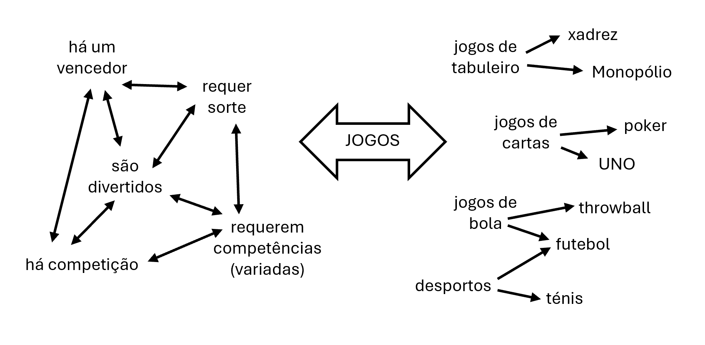
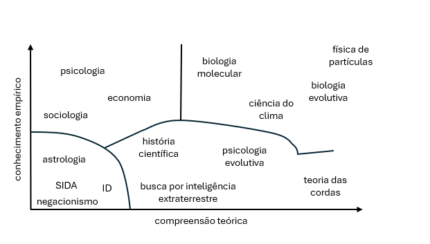

2 Que espécie de bicho é a ciência e como separá-la do joio da pseudociência?
À primeira vista, pode parecer fácil determinar o que a Ciência é e distingui-la do que não o é, ou seja, da charlatanice, da pseudociência ou de outros empreendimentos cognitivos humanos. No fundo, trata-se de reconhecer que o conhecimento científico é o conhecimento profundo, refletido e verdadeiro e distingui-lo, portanto, do conhecimento apenas aparente, do conhecimento superficial ou da falsidade. Essa, aliás, é a distinção clássica que esteve presente no pensamento ocidental desde o tempo de Parmênides: a distinção entre conhecimento (episteme) e mera opinião (doxa), ou por outras palavras, a tentativa de separar o trigo (a realidade / verdade) do joio (aparência / ilusão). Mas tivemos de esperar por Platão e pelo seu célebre Teeteto 2015) para lermos a proposta posta na boca de Sócrates, com a famosa definição de conhecimento como “crença verdadeira justificada”. E, nos 2400 anos que se seguiram, a definição aceite de conhecimento permaneceu a de Platão: “crença verdadeira justificada”. Como veremos à frente, no entanto, esta definição só foi seriamente posta em causa por Ed Gettier (1963).
2.1 Separando o Trigo do Joio ao Longo da História: Os Diferentes Critérios de Demarcação
2.1.1 Cepticismo e Dogmatismo
A filosofia grega debateu a natureza da justificação do conhecimento ainda antes de Platão e de Aristóteles. Deveria o conhecimento ter uma base empírica (referindo-se apenas aos dados dos sentidos ou à experiência, por exemplo, Epicuro) ou racional (referindo-se a justificações abstratas, a priori e/ou inatas, por exemplo, Pitágoras ou Platão)? Os céticos também se posicionaram neste debate e foram para além desta preferência por um critério racional ou empírico de justificação do verdadeiro conhecimento. Os céticos questionavam todas as justificações de conhecimento e da própria possibilidade de justificação. Tomemos como exemplo Pirro e sobretudo o seu seguidor, Sexto Empírico, autor de uma série de volumes com títulos, desde logo sugestivos, como Contra os Matemáticos, Contra os Gramáticos, Contra os Retóricos, Contra os Geómetras, Contra os Aritméticos, Contra os Astrólogos, Contra os Músicos, Contra os Lógicos, contra os Físicos, e Contra os Éticos): O objetivo de Sexto Empírico era permitir que o pensador cético visse para além das aparências e das convenções e suspendesse o julgamento (realizasse a epoché), começando a skepsis (procura) a partir do mínimo de considerações a priori. Sexto Empírico apresentou alguns modos de pensamento ardilosos. No fundo, trata-se de diferentes justificações que um dogmático (ou seja, um não-cético) adota para sustentar a sua crença. Identificar estas justificações ou modos de pensamento permite-nos, então, ir além das aparências. Mas que modos de pensamento são estes? Podemos tomar como exemplo o modo de regressão infinita, o modo de reciprocidade e o modo da hipótese, que usados em conjunto, passaram a ser conhecidos como o trilema de Agripa.1
Quando utiliza o modo de regressão infinita, o dogmático tenta fornecer apoio fundamentado para uma crença mas esse apoio, qualquer que seja, também necessita de apoio fundamentado e assim por diante até ao infinito e, como tal, torna-se pouco razoável defender uma crença cuja apresentação de fundamento vai necessariamente sendo sempre adiada.
Quando utiliza o modo de reciprocidade (circularidade), o dogmático cria uma cadeia de justificação em que a crença que se pretende fundamentar se torna também em fundamento e, como tal, a crença em causa passa a carecer de fundamento independente e não parece prudente adotá-la.
E quando utiliza o modo de hipótese (ou dogmático), o dogmático limita-se a afirmar a sua crença, sem apresentar qualquer fundamento. Neste modo, o dogmático não pode pretender que manter uma crença é melhor que qualquer outro palpite.
Para Sexto Empírico, o papel de um cético é identificar o modo de pensamento que um dogmático está a utilizar e fazê-lo dar-se conta do seu erro dogmático. É fácil ver como o trilema de Agripa é capaz de minar quase qualquer visão ou posição e ir além das aparências.
Para além de ser abordado por Sexto Empírico, o Trilema de Agripa também é mencionado por Aristóteles na sua obra fundamental Analíticos Posteriores do Organon IV (trad. port. de1987). Aristóteles refere-se às armadilhas desse trilema para explicar a necessidade de justificar o conhecimento científico, mas rejeita o modo de regressão infinita e o modo de circularidade e defende que o verdadeiro conhecimento necessita de certeza apodítica.2 É esta última característica que, para Aristóteles, identifica claramente o conhecimento e é nela que, de resto, assenta a posição da filosofia. O que separa o conhecimento de outros tipos de crenças é a certeza das suas fundações e, graças a essa certeza, a infalibilidade dos conhecimentos que delas derivam. Esta perspetiva fundacional foi a principal forma de defesa contra o ceticismo, embora, curiosamente, acabe por escolher apenas uma das alternativas do trilema de Agripa. Por isso, podemos olhar para a história da epistemologia como uma longa resposta ao ceticismo, sem grande êxito, indo de concessões parciais (por exemplo, Descartes, Kant, Wittgenstein) ou quase totais (por exemplo, Hume, Popper) até à defesa do seu evitamento puro e simples (Reid, Hegel). Mais, podemos considerar a ciência, baseada no pensamento crítico e questionamento constantes, construindo ideais de corroboração e refutação, cada mais exigentes, mas, ao mesmo tempo, aceitando a falibilidade do conhecimento humano como um projeto eminentemente cético.
Mas voltemos às peripécias do desenvolvimento da distinção entre conhecimento verdadeiro e mera crença: Pelo menos desde o final do Império Romano e durante boa parte da Idade Média, o conhecimento verdadeiro passou a ser identificável pela sua correspondência com as afirmações e ensinamentos de algum emérito autor e/ou fonte com autoridade epistemológica considerada absoluta. Este foi o critério de conhecimento quando o dogma de referência passou a ser as Escrituras Judaico-Cristãs. Daí que as fontes de justificação epistemológica anteriormente referidas tenham encontrado um novo limite na necessidade de corresponderem às escrituras. Por exemplo, apesar de Maimonides, um dos principais filósofos medievais sefarditas, ser um confesso admirador da racionalidade e ter defendido que nenhuma verdade poderia contradizer a razão, admitia também a necessidade da compatibilização de factos incontroversos com a interpretação da Torah (ver Guia dos Perplexos, Trad. ing.). O mesmo poderíamos dizer de Averróis (Belo, 2007), um dos maiores filósofos neoplatónico islâmico relativamente à não contradição com o Corão (A Incoerência da Incoerência) ou de S. Tomás de Aquino que defendia a autoridade suprema das Escrituras e que doutrinas que repugnassem à autoridade das Escrituras deveriam ser rejeitadas (Suma Teológica). Como afirma Aquino: “é evidente que algo de falso nunca pode ser [contido] sob o sentido literal da Sagrada Escritura” (Summa Theologiae, I, r, ro, ad 3). Esta é a chamada tese da Inerrância da Bíblia (ainda hoje defendida por alguns teólogos, ver Nicholls, 1980).
Claro que o problema prático do dogmatismo é o das fontes de referência que se desdizem ou o das múltiplas interpretações contrárias da mesma fonte. Aí entrava o chamado probabilismo na chamada casuística. É um princípio avançado pela ordem jesuíta no século XVI e que vigorou até ao século XVII. O que deve ser feito quando as autoridades epistemológicas, especialmente os Pais da Igreja, não concordam entre si? O problema tornou-se premente no final do Renascimento à medida que foi sendo proposta um número cada vez maior de interpretações das fontes dogmáticas. Basicamente, havia duas possibilidades. Para resolver o conflito, poderíamos reduzir as autoridades que reconhecemos, mantendo-nos apenas pelo recurso às escrituras e iluminados pela luz natural da razão. Ou poderíamos considerar um leque de autoridades mais vasto, mas ao decidir entre elas, devemos considerar os efeitos sociais e morais da adoção das suas várias doutrinas e optar pela que promete promover os efeitos mais benéficos. Curiosamente, e optando claramente pela segunda alternativa, o probabilismo na teologia não dizia que, quando as autoridades entram em conflito, devemos seguir a opinião mais provável. O probabilismo dizia que se pode seguir uma opinião provável ou outra, de acordo com os efeitos mais favoráveis para a sociedade da implementação social dessas opiniões, mesmo que uma opinião selecionada seja menos provável do que outras. A palavra “provável” aqui não significa “bem apoiada por provas”. Significa apoiada por, pelo menos, uma autoridade epistemológica. Quer isto dizer que em caso de dúvida, sobre a melhor forma de agir, poder-se-á, de acordo com os probabilistas, seguir um curso de ação que é recomendado por alguma autoridade e cuja implementação é considerada mais conveniente ou benévola, mesmo quando autoridades superiores em estatuto ou número aconselham o caminho oposto de ação. Mas, como Pascal argumentou nas Provinciais, é possível e assim aconteceu que os probabilistas optassem primeiro por um rumo de ação dada a conveniência social e moral e depois encontrassem um texto antigo que pudesse ser interpretado como aprovação desse curso de ação. Na prática, seria ter um critério de verdade que se adaptasse às crenças e necessidades de cada teólogo ou filósofo. Com isto, Pascal desferiu um golpe decisivo nas versões casuísticas e probabilísticas do dogmatismo, tornando-se também num dos grandes contribuidores para a versão mais moderna do racionalismo de que falaremos adiante (em conjunto com Descartes, Leibnitz, Espinoza e Kant) e até o precursor da teoria de decisão e da teoria dos jogos na sua célebre aposta sobre a existência de Deus (Pensamentos).
2.1.2 Empirismo
O critério empirista de verdade de uma afirmação ou de uma teoria é o da sua correspondência com os dados dos sentidos, a observação e/ou a experiência. Daí que, segundo este critério, se rejeite tudo o que não possa ser justificado pela evidência de dados ou factos. Tal era a posição do primeiro dos grandes filósofos empiristas britânicos, John Locke. Segundo Locke (Ensaio Acerca do Entendimento Humano), as mentes humanas nascem como tábuas rasas ou folhas em branco que só a experiência pode preencher. Francis Bacon, outro empirista, preconizava no Novum Organon que, para que os filósofos não se enganem a si próprios seguindo ídolos (ideias pré-concebidas e pouco perscrutadas), só os conhecimentos que tivessem origem em induções morosas e cuidadosamente escrutinadas é que deveriam ser tomados como válidos. Por exemplo, induções que partissem de muitos exemplos, todos partilhando a mesma característica essencial, permitindo assim, supostamente, a inferência de generalidade. Esta posição mistura empirismo e ceticismo e faz com que muitos o considerem como o pai do método científico. Contudo, David Hume (no Investigação sobre o Entendimento Humano), também um empirista, mas talvez sobretudo, o mais importante dos céticos, questionava a justificação das inferências indutivas, ou seja, questiona a razão de usarmos a nossa experiência particular como base de qualquer generalização ou da identificação de causas. Hume defendia que só conhecemos conjunções mais ou menos constantes de semelhanças, de contiguidades ou de precedências e que partir de conjunções constantes para a identificação de causas ou leis, é partir da observação de casos que conhecemos para a caracterização de casos que não conhecemos. A discrepância entre os casos que conhecemos e os casos que pretendemos caracterizar impossibilita qualquer justificação racional. E, se nos sentimos recompensados a fazê-lo, tal é apenas uma forma de superstição que só pode provir da nossa ascendência animal. Este é o famoso argumento de Hume contra a possibilidade de justificação das inferências indutivas ou causais, que inquietou e inquieta gerações de filósofos e cientistas (ver mais à frente a nota sobre a diferença entre indução e dedução).
2.1.3 Racionalismo
O critério racionalista da verdade de uma afirmação ou de uma teoria é o da sua natureza internamente consistente e dedutível a partir de um conjunto de postulados universais e/ou necessariamente verdadeiros (axiomas autoevidentes). O grande modelo dos racionalistas é a Geometria de Euclides que, a partir de um conjunto de pressupostos simples e autoevidentes (axiomas), desenvolve um conjunto de teoremas deduzíveis desses pressupostos e constitui um sistema lógico-formal impressionante (mas nunca completo, ver nota adiante sobre o segundo teorema de Göddel). Assim, a justificação de uma afirmação teria sempre de ser demonstrada, quer dizer, ter-se-ia de mostrar que essa afirmação era deduzível de pressupostos universais e/ou autoevidentes. A inferência lógica, base da justificação do conhecimento no racionalismo, não estaria, contudo, disponível para justificar os pressupostos ou axiomas de onde partem as inferências lógicas. Esses teriam de ser encontrados por meios extra-lógicos com base na sua universalidade ou no consenso generalizado que merecessem. Daqui nascem os célebres argumentos “cogito” na identificação dessas verdades indesmentíveis, o cogito ergo sum (penso logo existo) de Descartes e o de Santo Agostinho, si fallor, sum (erro logo existo) mas também os a priori que Kant defendeu serem indispensáveis à própria possibilidade de experiência e de aprender com ela – as categorias sensíveis a priori de tempo, e espaço. Além destas, Kant identificava ainda as categorias a priori do entendimento, quantidade (unidade, pluralidade e totalidade), qualidade (realidade, negação e limitação), relação (substância, causalidade e comunidade) e modalidade (possibilidade, existência e necessidade). Estas categorias a priori do entendimento poderiam ser preenchidas ou instanciadas pela experiência, mas não por ela formadas ou destruídas (Crítica da Razão Pura / Prolegómenos a Toda a Metafísica Futura). Para Kant, o conhecimento seria divisível em proposições sintéticas e analíticas. As proposições analíticas eram consideradas “verdadeiras em virtude de significados e independentemente do facto”, sendo muitas vezes derivadas das categorias a priori e necessárias. Já para as proposições sintéticas, a verdade é um valor que tem de ser determinado empiricamente. Numa aceção mais contemporânea, as proposições analíticas são tomadas como verdadeiras não por serem necessárias, mas por serem tautológicas (por exemplo, todos os homens solteiros não são casados). A proposta de categorias a priori e necessárias para a possibilidade da própria experiência e aprendizagem e que poderiam servir de base a um sistema dedutivo era, de certo modo, a resposta de Kant e dos racionalistas ao ceticismo de Hume.
2.1.4 Os Dois Grandes Problemas dos Critérios Clássicos Atrás Descritos
- A indução não pode alcançar justificação racional porque implica atribuir características de instâncias que conhecemos a instâncias que não conhecemos, que existiram no passado, que só existirão no futuro ou até que nunca existirão. A inferência indutiva de uma lei natural (ver em Hempel a noção de lei natural) como “todos os cisnes são brancos” realizada a partir dos cisnes que conhecemos, implica que os cisnes que nascerão serão brancos ou que, em lugares em que nunca existiram cisnes, se tivessem existido, teriam sido brancos. Ora é impossível justificar racionalmente tal inferência: é impossível garantir que, se as premissas forem verdadeiras (no caso, as inúmeras observações de cisnes brancos) então, a inferência é necessariamente verdadeira (todos os cisnes são brancos). E um dia descobriram-se cisnes negros na Austrália…
- É muito discutível e nunca consensual a existência de postulados universais e necessários. Por exemplo, os postulados de cogito podem apenas ter uma aplicação válida ao próprio (solipsista) mas não garantem justificação racional para qualquer generalização a outros seres. E, quanto a Kant, mesmo que aceitemos que não pode haver conhecimento de um objeto sem que ele seja tomado como uma instância de uma ou mais categorias a priori, podemos divergir sobre a natureza e identidade dessas categorias. Consideremos, por exemplo, a noção de que o espaço euclidiano é necessário e prévio a qualquer aprendizagem pela experiência. Apesar de plausível, tal a priori é difícil de sustentar, dada a hipótese de a natureza euclidiana do espaço no nosso universo ter sido refutada (a partir de evidência obtida a partir da teoria da relatividade, o nosso universo existe num espaço curvo de natureza Riemanniana). É claro que é sempre possível aceitar determinados postulados sem conceder, tentando identificar os teoremas que podem ser demonstrados a partir desses postulados, e construir arbitrariamente um sistema formal, tomando a geometria euclidiana como referência. Contudo não é garantido que tal aceitação transitória de postulados arbitrários contribua para o nosso conhecimento sintético (ver acima) nem que não existam teoremas verdadeiros que não sejam demonstráveis (ver nota adiante sobre teorema de Göddel).
Mas, talvez, juntando as duas fraquezas, essas fraquezas se possam tornar numa força, como veremos mais à frente.
2.1.5 A Nova Importância de um Critério de Demarcação em Duas Perguntas: Como Proteger a Sociedade das Pseudociências Mascaradas de Ciência? E Para Onde Vão as Teorias Científicas Após a Refutação?
As leis do movimento e da gravitação universal de Newton, constituíram provavelmente o pináculo da ciência pré-moderna e um sinal da revolução científica em plena eclosão. O êxito dessas teorias teve inúmeros impactos na sociedade do seu tempo e, naturalmente, também na própria Filosofia. Por um lado, mostrou como a Ciência é um domínio que não pode ser ignorado se se quiser compreender o que é o conhecimento e como é adquirido. Por outro, mostrou que se poderia ignorar as preocupações céticas, visto que o conhecimento parecia ser adquirível e utilizável com enorme êxito, mesmo se fosse dificilmente caracterizável ou justificável.
Quanto ao primeiro aspeto, a importância da Ciência para compreender e adquirir conhecimento, o próprio êxito da ciência fez eclodir o aparecimento de imitações, quer dizer, de abordagens com pouco a ver com a ciência, mas reclamando esse mesmo estatuto. Por exemplo, foi um contemporâneo de Hume, Samuel Hahnemann (1755-1843), que propôs uma das famosas pseudociências com pretensão de ciência – a Homeopatia. E a tendência apenas se acentuou, com o aparecimento de novos e ainda mais populares heróis científicos (por exemplo, Darwin, Einstein) nos séculos seguintes. Algumas das ideologias políticas passaram a apresentar-se como científicas (marxismo, racismo), algumas religiões ou teorias de base religiosa fizeram o mesmo (criacionismo, cientologia). Por isso, a demarcação da ciência deixou a torre de cristal da filosofia e passou a ser uma questão de educação formal e informal, de saúde pública e garantia do bom funcionamento das democracias.
Relativamente ao segundo aspeto relativo ao êxito de Newton face às preocupações céticas, basta recordar que a vontade de ignorar o ceticismo sempre caracterizou muitos filósofos. Hegel, por exemplo, afirmou que “o ceticismo é o adversário invencível da Filosofia”, é irrecusável, e a atitude filosófica só pode ser a do ignorar (ver Thomas Reid para posições de evitação do ceticismo). Daí que um exemplo glorioso de produção e acumulação de conhecimentos verdadeiros acerca do mundo representava uma grande forma de calar os céticos. Claro que o problema de Hume, relativo à impossibilidade de justificar das inferências indutivas, foi colocado pouco depois, o que não deixou nenhum filósofo ignorar o ceticismo de forma completamente tranquila por muito tempo. Mas o pior estaria para vir. Não só o exemplo de Newton era insuficiente para ignorar completamente o ceticismo, como ainda por cima, as leis do movimento e da gravitação universal de Newton eram falsas e foram refutadas por dados obtidos a partir da teoria da relatividade de Einstein. Teria a principal teoria de Newton deixado de ser científica? Ou uma teoria científica podia ser falsa? No fundo, tornava-se necessário responder à pergunta do título desta seção – para onde vão as teorias científicas quando são refutadas? Para responder a esta pergunta, foi necessária a emergência de novos critérios de demarcação e o desenvolvimento da Epistemologia das Ciências.
2.1.6 O Círculo de Viena e o Positivismo Lógico: O Advento da Epistemologia das Ciências e dos Epistemólogos Profissionais
O Círculo de Viena foi um movimento sobretudo de filósofos que se reunia entre 1924 e 1936 na Universidade de Viena, presidido por Moritz Schlick. A emergência do fascismo na Áustria e a anexação desta pela Alemanha Nazi, forçaram a maioria dos membros do Círculo de Viena a emigrar. O assassinato de Schlick em 1936 por um ex-aluno, marcou o fim simbólico do movimento. O empirismo lógico deve ser considerado como um movimento e não como uma doutrina, porque não existe provavelmente nenhuma ideia filosófica ou posição importante que seja partilhada por todos os aderentes do Círculo de Viena. O que emprestou coerência ao movimento foi uma preocupação comum com as relações entre ciência e filosofia. Preocupação que levou à emergência de filósofos profissionais da ciência (vindos quer da filosofia quer das ciências).
As abordagens filosóficas do Círculo de Viena foram coletivamente denominadas como empirismo ou positivismo lógico. O seu grande projeto foi o de fazer com que a filosofia tomasse a sério a ciência e se tornasse, ela própria, numa disciplina científica com a ajuda da lógica moderna. Este movimento foi grandemente inspirado pelas teses de Wittgenstein sobre o significado e a verdade das proposições, apresentadas no seu célebre Tratado Lógico-Filosófico: “Compreender uma proposição, quer dizer, saber a que se refere, e se é ela verdadeira. (Pode-se então compreendê-la sem saber se ela é verdadeira.) Compreendemo-la se compreendermos as suas partes constituintes.” [§ 4.024] O Círculo de Viena tomou como sua esta noção sobre o significado de uma proposição e designou-o como princípio da verificabilidade. Assim segundo Schlick (1936), o princípio de verificabilidade afirma que “indicar o significado de uma proposição equivale a indicar as regras segundo as quais a proposição deve ser utilizada, e isto é o mesmo que indicar a forma como pode ser verificada (ou falsificada). O significado de uma proposição é o método da sua verificação”. Mas Wittgenstein toma o critério de verificabilidade não só como critério do significado de uma proposição, mas também como noção guia do seu projeto de filosofia e critério de delimitação entre ciência e metafísica. Assim: “O método correto da filosofia seria o seguinte: só dizer o que pode ser dito, i.e., as proposições das ciências naturais – e portanto sem nada a ver com a Filosofia – e depois, quando alguém quisesse dizer algo de metafísico, mostrar-lhe que nas suas proposições existem sinais aos quais não foram dados uma denotação” [§ 6.3]. Portanto, uma proposição só teria significado se fosse verificável e o conhecimento científico seria o domínio próprio do universo das proposições verificáveis (ou testáveis), proposições cujo valor de verdade pudesse ser determinado pela confrontação empírica. (Nota, note-se que o que se exigia era que as proposições fossem testáveis, não que fossem verdadeiras, nem que já tivessem sido testadas).
CAIXA 1 - O Operacionalismo, o Princípio da Incerteza e o Comportamentalismo
Talvez a forma mais radical do critério de verificabilidade se deva a Bridgeman e ao seu “operacionalismo”: “aquilo que queremos expressar, por qualquer conceito, nada mais é do que um conjunto de operações; o conceito é sinónimo do conjunto de operações correspondente. Se o conceito for físico, como o conceito de comprimento, as operações são operações físicas efetivas, nomeadamente, aquelas pelas quais o comprimento é medido; se o conceito é mental, como o conceito de continuidade matemática, as operações são operações mentais, nomeadamente aquelas pelas quais determinamos se um dado agregado de magnitudes é contínuo. Não se pretende insinuar que existe uma divisão pura e dura entre conceitos físicos e mentais, ou que um tipo de conceito nem sempre contém um elemento do outro; esta classificação do conceito não é importante para as nossas considerações futuras. Temos de exigir que o conjunto de operações equivalente a qualquer conceito seja um conjunto único, pois caso contrário existem possibilidades de ambiguidade em aplicações práticas que não podemos admitir.”(Bridgman 1927)
Mais, Bridgman sublinhou que os conceitos não se estenderam automaticamente para além dos domínios em que foram originalmente definidos e, como tal, falar de conceitos de forma que transcende as operações que fazemos para os medir ou manipular é tornar tais conceitos vazios de significado.
Esta abordagem corresponde talvez mais perfeitamente ao ceticismo de Pirro e Sexto Empírico e à imposição de uma epochê (suspensão do juízo) mas, ao invés de provocar a ataraxia3 do operacionalista, o operacionalismo conduz o operacionalista a algumas surpresas. Na física, por exemplo, o princípio da complementaridade quântica de Niels Bohr (nota, físico dinamarquês, 1885-1962, principal proponente da interpretação de Copenhaga da Mecânica Quântica) assevera que a natureza da matéria e da radiação é dual e que os aspetos ondulatório e corpuscular não são contraditórios, mas complementares. E a razão é a de que as naturezas corpuscular e ondulatória da luz são ambas detetáveis, mas apenas o são separadamente, de acordo com o tipo de experiência. Assim, na experiência da dupla fenda de Young, os resultados sugerem que a natureza da luz é ondulatória, ao passo que na experiência do efeito fotoelétrico, os resultados sugerem uma natureza corpuscular, como demonstrou Einstein. Tal contradição é aceitável porque para Bohr, a natureza da luz não pode ser separada dos instrumentos de medição que criam o contexto em que a luz ao ser medida se comporta (operacionalismo, ver por exemplo Rosenfeld, 1953).
Note-se, contudo, que, sem pressupostos operacionalistas, tal contradição não seria atribuível à natureza da luz mas a limitações dos instrumentos e contextos experimentais em que é medida. Daí que, ao invés da aceitação da complementaridade, esperar-se-ia que uma teoria da luz elucidasse como a natureza da luz leva a resultados que sugerem uma natureza corpuscular ou ondulatória consoante as condições experimentais em que é medida (argumento semelhante é apresentado por Einstein, Podolsky & Rosen 1935). O princípio da incerteza e os saltos quânticos de Heisenberg ou o paradoxo do gato de Schroedinger decorrem da mesma aceitação radical do operacionalismo.
Mas onde a influência de Bridgman foi talvez ainda mais importante foi na Psicologia. Em que toda uma escola de pensamento, o comportamentalismo de Skinner, fez depender a aceitação de qualquer conceito à possibilidade da sua tradução em procedimentos experimentais ou em que o desempenho num teste relacionada com uma competência que se quer medir, passa a corresponder diretamente a essa competência (“inteligência é os que os testes testam”, Boring, 1923) e diferentes testes nunca poderiam medir a mesma competência (Bridgman, 1945).
O Círculo de Viena combinou empirismo e racionalismo numa abordagem inovadora ao conhecimento, integrando observações sistematizadas em leis gerais e um sistema formal e consequências logicamente válidas dessas leis gerais. Assim, o conhecimento adviria da enunciação de leis universais derivadas de observação sistemática (empirismo) e da dedução de teorias (racionalismo) que demonstrassem como as proposições que formam um determinado domínio científico podem ser deduzidas dessas leis universais. Assim, para o Círculo de Viena, uma teoria científica deveria ser um sistema dedutivo com axiomas que obtém uma interpretação empírica através de regras de correspondência. Essas regras estabelecem uma correlação entre os objetos ou processos reais e os conceitos abstratos da teoria. A linguagem de uma teoria inclui, então, dois tipos de proposições: observacional e teórica. Proposições observacionais denotam objetos ou propriedades que podem ser diretamente observados ou medidos, enquanto proposições teóricas denotam objetos ou propriedades que não podemos observar ou medir, apenas inferir de observações diretas. A distinção observacional/teórica assemelha-se à distinção kantiana entre proposições analíticas e sintéticas. As proposições analíticas são verdadeiras a priori e a sua verdade baseia-se nas regras da linguagem; pelo contrário, as proposições sintéticas dependem da experiência e a sua verdade só pode ser reconhecida através da experiência. Idealmente, as teorias científicas deveriam conter apenas proposições de um destes dois tipos, mas, nas teorias científicas, há muitas proposições teóricas que não são verificáveis nem necessariamente verdadeiras. Estas proposições carecem de significado segundo o critério da verificabilidade. Para expurgar as teorias científicas de proposições destituídas de significado, pode tentar-se eliminá-las ou tentar “reduzir” as “proposições teóricas” a “proposições observacionais”. As proposições teóricas que pertencem à linguagem abstrata de uma teoria científica devem ser explicitamente definíveis numa linguagem restrita cujas proposições descrevem apenas o que é diretamente observável.
Neste sentido, segundo o Círculo de Viena, o que distingue proposições científicas e não científicas é a verificabilidade das primeiras. Assim, as proposições presentes na linguagem científica são proposições sintéticas verificáveis ou analíticas (dedutivamente válidas) e muitas das proposições sintéticas das linguagens não-científicas podem ser sintéticas, mas inverificáveis, ou seja, sem significado.
Mais tarde, Carnap (1966, n’Os Fundamentos Filosóficos da Física) propôs uma abordagem ligeiramente diferente à distinção observacional-teórica. Agora, o ponto de partida é a diferença entre leis empíricas e teóricas. É possível confirmar (ou refutar) diretamente uma lei empírica, enquanto uma lei teórica só pode ser testada através das leis empíricas que lhe são consequentes. Além disso, uma lei empírica explica factos enquanto uma lei teórica explica leis empíricas. Assim, existiriam três níveis:
Factos empíricos: estes são expressos por “relatos diretos de observação”
Leis empíricas: Generalizações simples que podemos confirmar diretamente por observação. Explicam os factos e são utilizadas para prever factos empíricos, deduzindo proposições de observação de leis e proposições de condições iniciais.
Leis teóricas: Princípios gerais que podemos usar para explicar leis empíricas, deduzindo a partir deles leis empíricas, conhecidas ou novas.
As leis empíricas incluem apenas proposições observacionais, enquanto proposições teóricas ocorrem apenas em leis teóricas.
CAIXA 2 - O Critério de Verificabilidade e o Instrumentalismo: O Positivismo-Lógico e o Ceticismo
O instrumentalismo é uma posição que se considera próxima do positivismo-lógico, mas que o antecipou numa vintena de anos. Foi originalmente introduzida pelo físico francês Pierre Duhem (1906, La théorie physique: Son Objet, sa Structure), e defendida por cientistas como Ernest Mach e William Whewell, entre outros. De acordo com os instrumentalistas, uma teoria científica bem-sucedida não revela nada de verdadeiro ou falso sobre objetos, propriedades ou processos não-observáveis da natureza. Uma teoria científica é apenas uma ferramenta que permite fazer previsões empíricas acerca de um dado domínio da natureza, identificando regularidades observáveis ou formulando leis, enquanto as próprias teorias que permitiram identificar essas regularidades ou formular tais leis não revelam necessariamente quaisquer mecanismos ocultos da natureza que subjazem a essas leis ou regularidades e que de alguma forma as explicam.
O instrumentalismo evita o debate sobre se, por exemplo, os seis paladares (flavors) dos quarks (cima, baixo, estranho, charme, fundo e topo) são entidades que gozam de existência individual, sobre as equações que descrevem diferentes estados de um gás, sobre os modos de excitação de diferentes regiões de um campo, ou qualquer outra coisa. O instrumentalismo sustenta que os termos teóricos só precisam de ser úteis se forem capazes de prever fenómenos relevantes, independentemente de poderem ser verdadeiros ou ficções convenientes.
Como veremos adiante, as críticas ao positivismo lógico atingem também o instrumentalismo e o operacionalismo.
2.1.7 Popper e a Superioridade Lógica da Refutação em Ciência: Falibilismo e Ceticismo
Karl Raimund Popper (1902 – 1994) foi um dos maiores epistemólogos do século XX. Nasceu em 1902 em Viena e antes de se dedicar completamente à Filosofia foi ativista político de esquerda, professor primário, marceneiro, músico e tirou um curso de Psicologia onde foi examinado por Moritz Schlick em Filosofia e por Karl Buhler em Psicologia na sua prova oral final. No final dos anos 20, um tio também filósofo, Walter Schiff, trouxe-o aos debates do Círculo de Viena e, a breve trecho, Popper começou a escrever umas notas examinando criticamente as teses que estavam em voga na altura, nomeadamente, as de Wittgenstein. Herbert Feigl, um colega de Popper da Universidade convenceu Popper a tentar publicá-las e Moritz Schlick e Philipp Frank aceitaram publicá-las em 1933 na principal coleção do Círculo, a Escritos na Conceção Científica do Mundo, editada pela editora Julius Springer de Viena. Popper apelidou essas notas como Os Dois Problemas Fundamentais em Epistemologia mas a editora considerou o 1º volume demasiado grande e Popper foi forçado a condensar os dois volumes da obra num único. Mesmo assim, a obra foi considerada grande demais e o tio de Popper, Walter Schiff, criou um livro de excertos, publicado em alemão em 1934 e traduzido para inglês cerca de 20 anos depois, que acabou por se chamar A Lógica da Descoberta Científica. Foi e é uma das obras decisivas da Epistemologia. As notas originais só haveriam de ser publicadas em alemão em 1978 e em inglês em 2009 (com o 2º volume incompleto, porque acabou por nunca ser completamente escrito).
Os dois problemas da Epistemologia são, segundo Popper, a Indução e a Demarcação ou como ele os designou, o problema de Hume e o problema de Kant. Popper afirma que resolveu o problema de Hume muito cedo na sua vida, mas que não achou que valesse a pena publicar tal solução porque ela já tinha sido antecipada por muitos outros filósofos como, por exemplo, Sexto Empírico, no sentido em que a resposta à pergunta “que justificação racional existe para a indução?” é: “nenhuma”. Só quando Popper compreendeu que exista uma relação entre o problema de Hume e o do Kant é que considerou existir algo de novo. Passemos então uma breve discussão destes dois problemas e das suas soluções segundo Popper.
O problema de Hume (o primeiro problema de Popper)
Como já vimos, segundo Hume, a indução implica a generalização das características dos casos que observamos para a caracterização de casos que nunca observamos. Como tal, nunca está garantido que, mesmo partindo de premissas verdadeiras, uma inferência indutiva seja verdadeira. Segundo Hume, a razão para acreditarmos em tais inferências, tem mais quer ver com as nossas limitações cognitivas do que com qualquer argumento racional ou evidência empírica que apoie tais inferências. Bertrand Russell, ilustrava o problema de Hume com uma história cheia de moral, a história do peru indutivista:
“Este peru descobriu que, na sua primeira manhã na fazenda de perus, foi alimentado às 9 da manhã. No entanto, sendo o peru, um bom peru indutivista, não se permitiu conclusões precipitadas. Esperou até ter recolhido um grande número de observações sobre o facto de ter sido alimentado às 9 da manhã e recolheu estas observações sob uma grande variedade de circunstâncias – às quartas e quintas-feiras, em dias quentes e dias frios, em dias chuvosos e dias secos. Todos os dias, acrescentou outra instância à sua lista de observações. Finalmente, o carácter sistemático e exaustivo da sua lista de observações tornou-se indubitável e o peru sentiu-se confiante na realização da seguinte inferência indutiva:”Sou sempre alimentado às 9h da manhã.”. Infelizmente, esta conclusão mostrou-se claramente falsa quando, na véspera de Natal, em vez de ser alimentado, lhe cortaram a garganta. Moral: Uma inferência indutiva mesmo com premissas verdadeiras pode sempre conduzir a uma falsa conclusão.”
Mas a falta de justificação racional para a indução só se torna verdadeiramente problemática para quem quer assentar como Bacon o método científico na indução, ou de uma forma geral, para quem pretende argumentar que as teorias, leis, generalizações, ou mais geralmente, os conhecimentos científicos têm necessariamente de ter uma base empírica que lhes permita partir do particular e alcançar o geral. Ou seja, a falta de justificação racional para a indução transtorna especificamente os indutivistas mas também os empiristas no geral. Popper deixa cair os primeiros e vem em socorro dos segundos. Assim, o fundamento empírico da ciência não advém da indução mas sim da dedução, ou dizendo de uma forma mais prosaica, vem do método de tentativa e erro (o falibilismo).4 É de notar que uma indução é dedutivamente inválida, senão observe-se o seguinte silogismo:
Exemplo 1
Todos os cisnes que observei até agora são brancos (Xi)
Xi+1 é um cisne que ainda não observei,
Logo, Xi+1 é branco
Um cuidador de cisnes europeu que nunca tivesse ido à Austrália poderia sentir-se justificado a fazer tal indução depois de viver uma vida rodeado de cisnes brancos, mas tal não garantia que, em lugares onde o tratador nunca tivesse ido, não os houvesse. E havia, na Austrália.
Ou tomando um exemplo, mais próximo da investigação científica:
Exemplo 2
Se a teoria T for verdadeira, então a previsão P verificar-se-á
P verificou-se,
Logo, a minha teoria é verdadeira
Aqui o problema é que mesmo que T preveja P, pode haver sempre outras teorias que façam a mesma predição (de um ponto de vista técnico, existe mesmo um número infinito de teorias que o fazem) e, pelo menos relativamente às teorias contrárias, ou só uma delas é verdadeira (e essa teoria pode não ser T) ou são todas falsas. Esta inferência tem a forma de um silogismo, mas é um silogismo inválido, quer dizer, é um silogismo em que a verdade das premissas não se transmite necessariamente à conclusão, é a chamada falácia da afirmação do consequente. Vejamos o mesmo silogismo relativo a assuntos mais comezinhos, de modo que a sua invalidade seja ainda mais óbvia:
Exemplo 3
Se for eleito deputado, então apanharei o autocarro 727 (que passa em S. Bento) no dia de tomada de posse dos deputados da nova assembleia.
Apanhei o autocarro 727 no dia de tomada de posse dos deputados da nova assembleia.
Logo, fui eleito deputado
(por acaso não, nem concorri a deputado, fui aos pastéis de Belém, o 727 também passa por lá)
Popper argumenta que, apesar de se tratar de uma conclusão inválida, essa conclusão não impede que a ciência se desenvolva a partir de uma base empírica, senão vejamos.
Exemplo 4
Se a teoria T for verdadeira, então a previsão P verificar-se-á
P não se verificou,
Logo, a minha teoria é falsa
Repara-se que, neste caso, a inferência corresponde a uma inferência válida, o Modus Tollens, e é válida porque se as premissas forem verdadeiras, a conclusão será necessariamente verdadeira. Vejam o mesmo tópico de há pouco (S. Bento) neste tipo de silogismo:
Exemplo 5
Se for eleito deputado, então apanharei o autocarro 727 (que passa em S. Bento) no dia de tomada de posse dos deputados da nova assembleia.
Não apanhei o autocarro 727 no dia de tomada de posse dos deputados da nova assembleia.
Logo, não fui eleito deputado.
(aqui se as premissas forem verdadeiras, a conclusão terá de ser verdadeira e, portanto, o silogismo é válido)
Portanto, a verdadeira base empírica da ciência não advém da confirmação das teorias quando confrontadas com os dados, mas sim da tentativa-e-erro, da rejeição das teorias quando as suas previsões falham empiricamente. Neste sentido, Popper contesta o método científico baconiano, com algum humor. Assim nas palavras de Popper: “Começo, regra geral, as minhas lições sobre Método Científico dizendo aos meus alunos que o método científico não existe. Acrescento que tenho obrigação de saber isso, tendo eu sido, durante algum tempo, pelo menos, o único professor desse inexistente assunto em toda a comunidade britânica. […] Tendo, então, explicado aos meus alunos que não há essa coisa que seria o método científico, apresso-me a começar o meu discurso, e ficamos ocupadíssimos. Pois um ano mal chega para roçar a superfície mesmo de um assunto inexistente.”
Adiante, Popper esclarece a inexistência do método científico, no sentido em que: “Não há um método para descobrir uma teoria científica. Não há um método para averiguar a verdade de uma hipótese científica, quer dizer não há um método de verificação. Não há um método para determinar se uma hipótese é”provável” ou “provavelmente verdadeira”Karl R. Popper (O Realismo e o Objetivo da Ciência)
Como vemos, Popper defendeu que o conhecimento científico e todo o conhecimento é conjetural e falível, quer dizer, Popper abandona a possibilidade de justificar o conhecimento (i.e., defende uma perspetiva não-justificacionista).
Mas alguns seis anos após a publicação da Lógica da Descoberta Científica, surge um desafio ainda mais inquietante para as certezas humanas: o desafio de Gettier (1963) e a pequena indústria filosófica gerada pelo seu artigo – a ideia de que mesmo uma crença verdadeira justificada poderia não corresponder a verdadeiro conhecimento. Ou seja, se admitirmos a posição de Popper, aceitamos que o conhecimento humano é necessariamente não-justificável. Mas se aceitarmos a crítica de Gettier a essa noção de conhecimento como crença verdadeira justificada, passamos a admitir que mesmo que se pudessem justificar crenças verdadeiras, essas crenças poderiam não corresponder a verdadeiro conhecimento (ver Caixa 3, Os Casos Gettier).
CAIXA 3 - Os Casos Gettier
Edmund Gettier era um jovem filósofo americano que procurava alcançar o provimento definitivo da sua posição académica. A produção académica (isto é, a publicação de artigos em revistas da sua especialidade académica e que sejam muito citados pelos pares) é fundamental para se alcançar um vínculo. Infelizmente, o seu registo de publicações era muito reduzido e a data da decisão sobre o seu provimento aproximava-se a grande velocidade. Gettier precisava de algo sobre o qual escrever, algo que fosse interessante, publicável e, acima de tudo, algo que pudesse ser escrito muito rapidamente. Num inusitado impulso, Gettier escreveu um pequeno artigo de três páginas descrevendo sua objeção à visão do conhecimento como “crença verdadeira justificada” e enviou-o para a conceituada revista de filosofia Analysis. Foi publicado em 1963 e criou a tempestade perfeita.
No seu artigo original, Gettier (1963) apresentou casos hipotéticos em que uma crença verdadeira justificada não correspondia a verdadeiro conhecimento. A partir daí construir casos hipotéticos desse tipo tornou-se uma pequena indústria filosófica e, por isso, abaixo adapto e simplifico um dos meus casos preferidos da autoria de Goldman (1976), o chamado caso do “condado dos falsos celeiros”.
O Henrique está a passear de carro com o filho pelo campo. Para a edificação do menino, Henrique identifica vários objetos na paisagem à medida que vão passando por eles. “Isso é uma vaca” diz Henrique.: “Isso é um trator”, “Isso é um silo”, “Isso é um celeiro”, etc. O Henrique não tem dúvidas sobre a identidade desses objetos; em particular, ele não duvida que o último objeto mencionado é um celeiro, o que, de facto, é. Cada um dos objetos identificados tem características distintivas que os identificam. Além disso, cada objeto está totalmente à vista, o Henrique tem excelente visão, e ele tem tempo suficiente para os olhar com razoável cuidado, já que há pouco trânsito para o distrair. Suponhamos, contudo, de que somos informados de que o Henrique sem se ter dado conta, acabou de entrar num condado que está cheio de fac-símiles de celeiros, feitos de papel machê. Estes fac-símiles, da estrada, parecem exatamente como celeiros, mas são realmente apenas fachadas, sem paredes ou interiores, inúteis como celeiros. Eles são habilmente construídos para que os viajantes invariavelmente os confundam com celeiros. No entanto, por acaso, o edifício apontado por Henrique é um verdadeiro celeiro. Mas se o objeto naquele local fosse um fac-símile, ele tê-lo-ia confundido com um celeiro. Tendo em conta esta nova informação, dificilmente poderíamos afirmar que a identificação do verdadeiro celeiro, em si, reflita algum conhecimento intrínseco de Henrique sobre celeiros.
E, no entanto, a crença que Henrique comunicou ao filho é verdadeira. Mais, o Henrique poderia justificar a sua crença no facto dos celeiros terem características distintivas e diagnósticas que ele detetou naquele objeto. Claro que, depois de Hume, sabemos que essa justificação é indutiva e, portanto, não garante a verdade da conclusão. Mas vamos admitir que aceitamos o argumento indutivista. Mesmo assim, não poderíamos aceitar a crença do Henrique sobre aquele celeiro como conhecimento.
Casos como o referido na Caixa anterior levaram a uma série de tentativas de salvar ou de reformular o conceito de conhecimento como crença verdadeira justificada. A melhor sucedida é a chamada perspetiva fiabilista do conhecimento também avançada por Goldman (1979) em que o autor defende que “se uma crença mantida por uma pessoa, num dado momento, resulta de um processo fiável (ou de um conjunto de processos) de formação de crenças, então essa crença é justificada”. Quer isto dizer que a crença verdadeira de uma pessoa é justificada, apenas se o estado real das coisas em que a crença é verdadeira, é distinguível de um possível estado de coisas relevantes em que a crença é falsa. Isto deve verificar-se, pelo menos, probabilisticamente, quer dizer: em qualquer situação relevante, a probabilidade da pessoa formar uma crença verdadeira é maior do que formar uma crença falsa. Se houver pelo menos uma possível situação relevante em que uma crença falsa é indistinguível pela pessoa da situação atual, então a crença não é justificada. Na descrição do caso do celeiro a situação atual relevante em que o objeto em questão é um celeiro, é indistinguível (por Henrique) do estado contrafactual relevante em que o objeto identificado é um falso celeiro, portanto, a crença de que o Henrique tem o conhecimento do que é um celeiro não é justificável.
Qualquer crença verdadeira justificada requer uma especificação completa da situação em que essa crença é mantida, isto é, requer que se identifique o conjunto único de alternativas relevantes: o conjunto ao qual pertencem as situações em que a crença se torna verdadeira e o conjunto de situações alternativas relevantes em que a crença apesar de poder ser tomada como verdadeira é, de facto, falsa. O conhecimento torna-se assim a competência para distinguir entre os dois conjuntos de situações. De acordo com este ponto de vista, o conteúdo semântico do “conhecimento” de qualquer suposto conhecedor tem de conter as condições (implícitas) que mapeiam as alternativas relevantes. Uma análise da justificação de um conhecimento é incompleta, a menos que especifique estas regras.
Como veremos adiante, a perspetiva fiabilista é incrivelmente semelhante à Teoria de Teste em Estatística e à Teoria de Deteção de Sinais.
O problema de Kant (ou segundo problema de Popper)
Nas suas próprias palavras, Kant foi acordado do seu sonho dogmático (racionalista) pelo problema de Hume com os seus limites do indutivismo (Prolegómenos a toda a Metafísica Futura). O êxito de Newton parecia demonstrar que os receios dos céticos eram infundados e que a humanidade poderia alcançar o conhecimento verdadeiro. Mas o problema de Hume mostrou que as leis propostas por Newton careciam de justificação lógica e tal levou Kant a interrogar-se: i) sobre o significado dos termos “metafísica” e “ciência empírica” e a possibilidade de estabelecer distinções estritas ou determinar determinados limites; ii) sobre o que torna as ciência matemáticas possíveis; iii) sobre o que torna as ciências naturais possíveis; iv) sobre a possibilidade da metafísica alguma vez poder alcançar o estatuto ou ciência ou se a bem do progresso deve ser rejeitada (Prolegómenos a toda a Metafísica Futura). Defendeu uma combinação entre empirismo e racionalismo, e introduziu as distinções entre proposições analíticas e sintéticas (uma distinção lógica) e conhecimento a priori e a posteriori (uma distinção acerca dos fundamentos do conhecimento). A distinção entre proposições sintéticas e analíticas já foi atrás referida. As proposições analíticas são tomadas como verdadeiras por serem tautológicas (por exemplo, o João é mais alto do que o Pedro, o Pedro é mais alto do que o Cristóvão, logo o João é mais alto do que o Cristóvão) e dependem do princípio da contradição, ou seja, a sua negação é uma contradição lógica (no exemplo não é possível que o João seja mais alto do que o Pedro, o Pedro seja mais alto do que o Cristóvão, e que o João não seja mais alto do que o Cristóvão). Em contrapartida, uma proposição sintética é, por definição, uma proposição cuja verdade ou falsidade não pode ser decidida apenas pela lógica: é suscetível de contradição, ou seja, pode ser contraditada sem necessariamente nos conduzir a uma inconsistência ou contradição interna. Se a sua negação não conduz a uma contradição, então é logicamente possível. Vejamos o exemplo abaixo:
Uma afirmação como “Popper viveu durante anos nas profundezas do oceano” é uma proposição (falsa) sintética: a falsidade desta afirmação é-nos mostrada pelo nosso conhecimento sobre como os seres humanos vivem; ela não nos é mostrada por uma inconsistência lógica interna da afirmação. Já a afirmação “Se Popper viveu durante anos nas profundezas do oceano, então há homens que vivem durante anos nas profundezas do oceano” é uma afirmação analítica, pois é logicamente demonstrável pela transformação das definições dos conceitos envolvidos: se eu nego o consequente, não “há homens que vivem durante anos nas profundezas do oceano”, então o antecedente “Popper viveu durante anos nas profundezas do oceano” é negado e a afirmação é demonstrada falsa pela sua lógica interna.
A distinção entre a priori e a posteriori diz respeito ao fundamento desse conhecimento. Conhecimento a priori é um conhecimento que não necessita da fundamentação da experiência para ser verdadeiro e que, segundo Kant, em certos casos até pode subjazer a toda a experiência. Conhecimento a posteriori só pode ser fundamentado pela experiência. Esta distinção captura aliás uma distinção clássica. O racionalismo clássico sustentava que a verdade ou falsidade de afirmações sobre a realidade pode (sob determinadas condições) ser decidida pela razão, ou seja, “a priori” (sem referência necessária à experiência). O empirismo clássico representa o ponto de vista oposto. A sua tese fundamental é que a verdade ou falsidade de uma afirmação empírica pode ser decidida apenas “a posteriori”, ou seja, pela experiência.
Segundo Kant “a natureza é a existência das coisas enquanto é determinada por leis universais” e a “a totalidade de todos os objetos da experiência” (Prolegómenos a toda a Metafísica Futura, p. 65 e p. 67). Ora Kant aceita a crítica de Hume sobre a possibilidade de justificar as inferências indutivas, e não podemos, por isso, esperar que a indução nos permita passar justificadamente da experiência às leis naturais? Assim sendo, como serão então possíveis as ciências naturais? As ciências naturais são possíveis, como já vimos e segundo Kant, porque todos possuímos intuições a priori (as categorias) que permitem a própria experiência e garantem um fundamento racional para a formulação de leis naturais. E essa fundamentação da ciência natural em conhecimento sintético a priori é o que distingue o conhecimento obtido pela ciência natural por comparação com outros tipos de conhecimentos. As ciências matemáticas, por exemplo, enquanto permanecerem apenas dedicadas a objetos abstratos, apenas podem fundamentar conhecimento analítico a priori.
Popper concordava com a necessidade de encontrar o fundamento do conhecimento das ciências naturais para além da experiência, em algo que funcionasse como leis, mas discordava da necessidade de recorrer a intuições a priori para desempenhar esse papel. De facto, a própria validade, forçosamente transitória, da conjetura de leis naturais sem justificação racional fazia com que tais leis pudessem ser contraditadas pelos factos sem que isso representasse, necessariamente, a inconsistência de uma teoria. Por isso, segundo Popper, a própria natureza conjetural poderia constituir o critério de demarcação entre ciência e não-ciência. Segundo Popper, só as afirmações que podem ser refutadas pela realidade empírica nos dizem algo sobre tal realidade; ou seja, afirmações para as quais podemos especificar as condições em que devem ser consideradas empiricamente refutadas. De acordo com o critério do falsificacionismo, afirmações falsificáveis são declaradas empírico-científicas, enquanto as outras afirmações (incluindo afirmações verificáveis, mas não-refutáveis) – na medida em que não sejam tautologias lógicas – são consideradas metafísicas. Popper formula assim o critério da demarcação: Uma afirmação só ser considerada como pertencendo ao domínio da ciência empírica se afirmar algo sobre a realidade, quer dizer, se for empiricamente falsificável, isto é: se puder estar em conflito com a experiência.
Na epistemologia anterior a Popper, o critério de demarcação pretendia separar as ciências da filosofia ou da metafísica e, por isso, tinha enormes implicações teóricas, mas reduzidas implicações práticas. Mas para Popper, no início do séc. XX, o problema da demarcação passou também a ser socialmente crucial porque passou também a dizer respeito à separação entre a ciência e a pseudociência. Porque devido à importância social da ciência, muitas propostas não-científicas passaram a reclamar-se do estatuto científico para ganharem legitimidade social. Os dois exemplos típicos de Popper foram o marxismo e a psicanálise. Hoje a lista seria imensa (por exemplo, homeopatia, aromaterapia, reflexologia, criacionismo, parapsicologia, etc.) para além do cinismo pseudocientífico que rejeita os consensos científicos (por exemplo, quanto às mudanças climáticas, benefícios das vacinas, a curvatura do globo terrestre). Mas claro que o aumento da necessidade de um critério de demarcação não torna esse processo de busca menos moroso, como veremos adiante, bem pelo contrário.
Popper refere logo nos Dois Problemas Fundamentais da Epistemologia que o objetivo da sua proposta de demarcação foi muitas vezes incompreendido, assumindo-se que o critério pretendia caracterizar teorias atualmente aceites nas ciências empíricas, enquanto Popper pretendia demarcar todas as teorias empíricas-científicas, incluindo as desatualizadas ou refutadas. Isto é, Popper pretendia distinguir todas as teorias empíricas falsificadas ou corroboradas até ao momento de teorias pseudocientíficas, e também da lógica, matemática pura, metafísica, epistemologia e filosofia em geral. Outra incompreensão era relativa às afirmações excluídas pelo critério de demarcação. Ao contrário do que alguns pensaram, essas afirmações não devem ser necessariamente desprovidas de significado, não-racionais ou inadmissíveis. Existem muitas afirmações metafísicas que possuem uma significação óbvia (por exemplo, “longe vá o agoiro”) e algumas até podem ser consideradas da maior utilidade no desenvolvimento das ciências (a hipótese da seleção natural de Darwin). A terceira e última incompreensão é óbvia e manifesta-se na pergunta: “Mas este critério de demarcação em si é empiricamente refutável?” E a resposta é a de que é claro que não é empiricamente refutável, pois não é uma hipótese empírica-científica, mas uma tese filosófica (metafísica). Trata-se de outro caso de uma afirmação que é excluída pelo critério de falsificabilidade, mas que possui enorme utilidade para o progresso da ciência e para a sua correta aceitação social. E, como parte da reflexão metafísica, mas útil sobre a ciência, o critério de falsificabilidade é eminentemente criticável.
2.1.8 Críticas ao Falsificacionismo
A principal crítica é a chamada tese de Duhem-Quine (posição defendida independentemente pelo físico francês Pierre Duhem e pelo filósofo americano Willard Quine). A tese é a seguinte: Uma teoria não pode ser testada isoladamente, para ser testada necessita de uma rede hipóteses auxiliares, por isso qualquer resultado que refute a “teoria” está a refutar algo no sistema teoria + hipóteses auxiliares (só não sabemos o quê) e pode sempre salvar-se a teoria mudando adequadamente as hipóteses auxiliares. Daí que o silogismo aplicável ao teste das previsões empíricas de uma teoria deve ser:
Exemplo 6
Se a teoria T é válida e se as hipóteses auxiliares S forem verdadeiras
Então a previsão P realizar-se-á…
A previsão P não se realizou.
Logo, a teoria T não é verdadeira e/ou
alguma das hipóteses incluídas em S não é verdadeira.
O mesmo se obtém incluindo a cláusula ceteris paribus (quer dizer, mantendo-se tudo o resto constante). Uma previsão ou uma asserção sobre uma relação causal, empírica ou lógica entre dois estados é realizada ceteris paribus: se se reconhecer que a previsão, embora geralmente adequada nas condições esperadas, pode falhar ou que a relação pode ser abolida por fatores intervenientes não considerados anteriormente. Assim:
Exemplo 7
Se a teoria T é válida (ceteris paribus)
Então a previsão P realizar-se-á…
A previsão P não se realizou.
Logo, a teoria T não é válida e/ou
as condições iniciais não eram ceteris paribus.
Assim quando, os resultados de uma investigação contradizem uma teoria, a comunidade científica tem de chegar a acordo em rejeitar a teoria ou os resultados (no sentido em que esses resultados foram obtidos em condições diferentes daquelas que o teste da previsão pressupunha).
CAIXA 4 - Refutações em Química e em Psicologia: Não Basta Juntar Informação Contraditória
Imke Lakatos dá-nos um exemplo histórico de um desses casos (A Crítica e o Desenvolvimento do Conhecimento). O exemplo refere-se à resistência dos Proutianos às provas experimentais desfavoráveis produzidas por Stas de 1815 a 1911 (Kendall, 1950). Durante décadas, a teoria de Prout (T) dizia que todos os átomos são compostos de átomos de hidrogénio e que, portanto, os pesos atómicos de todos os elementos químicos (puros) devem corresponder aos números inteiros múltiplos do peso do hidrogénio. A refutação (R) dessa teoria foi obtida por Stas (o peso atómico do cloro não é um múltiplo inteiro de um átomo de hidrogénio, é 35.45 vezes o peso atómico do hidrogénio). No final, T prevaleceu sobre R. Como?
Vejamos mais de perto a estrutura de R. Na verdade, R pressupõe a conjunção de duas hipóteses teóricas adicionais mais específicas A1 e A2. Não nos esqueçamos que a teoria de Prout só se aplica a elementos químicos puros. A primeira afirmação A1, poderia ser a seguinte: “Se os 17 procedimentos químicos de purificação conhecidos, p1, p2, …,p17, forem aplicados ao gás de cloro, o que resta será puro cloro.” e A2: “O experimentador cuidadoso aplicou cuidadosamente todos os dezassete procedimentos.”. Quando o experimentalista aplica cuidadosamente todos os dezassete procedimentos, ele assume que o que restou desses procedimentos de purificação é cloro puro e toma esta assunção como um “facto concreto”, mas este “facto” assenta apenas em A1. Ele depois testou T assumindo A1, assumindo que tinha obtido cloro puro – um elemento químico puro. E interpretou o que viu à luz do A1. O resultado foi R.
Mas e se A1 for falsa? Por que não conservar T e rejeitar A1? Por que não considerar que são necessários procedimentos de purificação adicionais para se obter um elemento químico puro? O problema não é, então, quando devemos cingir-nos a uma “teoria” face a “factos conhecidos” ou quando devemos fazer o contrário. O problema não é o que fazer quando as “teorias” colidem com “factos”. Este “choque” só é sustentado pela teoria em conjunção com as hipóteses auxiliares. Se um dado resultado representa uma refutação da teoria ou o malogro de manter as condições adequadas a esse teste é uma decisão metodológica. No caso em apreço, Michael Rutherford, mais tarde, demonstrou que dois elementos puros separáveis por métodos físicos de purificação, podem comportar-se de forma idêntica em todas as reações químicas. O cloro é formado por dois isótopos com massas atómicas diferentes, 35Cl e 37Cl, em proporções tais que o peso médio do cloro natural é 35.45 vezes o do hidrogénio. Mas repare que a massa número de cada isótopo é um múltiplo inteiro da massa do átomo do hidrogénio (no caso, 35 e 37)! Portanto, a grande “refutação” da teoria de Prout não só não levou ao abandono da teoria, como levou a uma reformulação dos processos de purificação e a um avanço teórico muito relevante.
Outro exemplo, desta vez da Psicologia.
Nos anos cinquenta do séc. XX, a teoria mais importante do esquecimento era a teoria de interferência, a ideia de que a memória da informação anteriormente aprendida interfere com a aprendizagem de nova informação (interferência proativa) e vice-versa (interferência retroativa), sendo o esquecimento resultado dessa interferência (McGeogh, 1932; Melton, 1963; Underwood 1957). Contudo, Lloyd and Margaret Peterson (1959), na pegada de Brown (1958), realizaram um estudo em que os participantes tinham de memorizar trigramas (trios de consoantes sem sentido). Os trigramas foram apresentados um de cada vez. Após ouvir cada trigrama, era pedido aos participantes que contassem para trás de três em três, a partir de um dado número aleatório e continuassem até aparecer uma luz vermelha (chamada a técnica brown-peterson que tinha como objetivo impedir o ensaio mental). O tempo que lhes era dado para fazer essa contagem variava entre 3, 6, 9, 12, 15 ou 18 segundos e a seguir, tinham de recordar o trigrama anteriormente apresentado. Os resultados mostraram que, quanto mais tempo cada participante tinha de contar para trás, pior era a memória do trigrama. Após 3 segundos, 80% dos trigramas foram recordados corretamente. Após 6 segundos, a percentagem caiu para 50%. Após 18 segundos, a recordação caiu para menos de 10%. Portanto, na ausência de nova aprendizagem, entre a aprendizagem inicial e o teste de memória, a passagem do tempo, por si só, pareceu descrever perfeitamente o processo de esquecimento e a teoria da interferência parecia ter sido refutada. Mas Keppel e Underwood (1962) analisaram o esquecimento no estudo de Peterson e Peterson (1959) não em função no tempo, mas função da acumulação dos ensaios. No primeiro ensaio, o desempenho dos participantes era basicamente perfeito. Mas à medida que se sucediam os ensaios, o desempenho ia constantemente piorando, independentemente do tempo que mediava o estudo do trigrama e o respetivo teste. Assim, na verdade, ao invés de refutar a teoria da interferência, os resultados de Peterson e Peterson (1959) podem ser considerados como uma corroboração. Correntemente, a investigação atual sobre o esquecimento já demonstrou que tanto o desuso ao longo do tempo como a interferência contribuem para o esquecimento (Bjork & Bjork, 1992) mas a questão é mais uma vez, a verificação de que a refutação não é um processo automático nem meramente lógico que leva imediatamente ao abandono de uma teoria à luz de informação contraditória. Pode levar ou não à refutação, como dizia Lakatos, não existe racionalidade instantânea.
Portanto, o falsificacionismo como critério de demarcação entre ciência e não-ciência, parece não caracterizar a ciência, pelo menos no sentido em que as “refutações” em ciência não são automáticas e, não correspondem a meras inferências dedutivas.
Claro que a questão é a de que podemos recorrer a um falsificacionismo mais sofisticado e mantê-lo como critério de demarcação entre ciência e não-ciência, mesmo que a refutação de teorias científicas não dependa só da existência de ocorrências disconfirmatórias, passando tais ocorrências a ser consideradas necessárias, mas não suficientes. A condição suficiente para a refutação passaria a ser a de que a falsidade da teoria seria a melhor explicação possível para o conjunto total de dados obtidos na exploração empírica da teoria. Nesse sentido, a refutação de uma teoria não é uma dedução, mas uma abdução (um conceito introduzido por Peirce, Collected Papers of Charles Sanders Peirce), no sentido de ser uma inferência da melhor explicação (IME, ver Hamon, 1965; Thagard, 1978) para o conjunto dos dados, explicação que depois continuará a ser testada. Uma posição falsificacionista admitiria, assim, que a decisão de refutação de uma teoria é, no fundo, uma escolha entre teorias e a IME terá em consideração, nestes casos, uma série de heurísticas extra-empíricas de decisão, como o privilégio da explicação com maior generalidade e maior especificidade, a severidade do teste realizado e a parcimónia. Claro que a IME terá sempre que não ser confundida com a mudança ad hoc da teoria para acomodar dados contraditórios.
Será então Popper, um falsificacionista automático ou dogmático ou falsificacionista sofisticado? Segundo Lakatos (1970), um estudante de Popper, a posição adotada pelo mestre foi em alguns textos mais próxima da primeira versão do falsificacionismo, mas noutros, mais próxima da segunda. Lakatos, apresenta a sua própria versão de falsificacionismo sofisticado que será discutida mais adiante.
2.1.9 Kuhn e os Paradigmas como Critério de Demarcação
Thomas Kuhn começou por ser um físico, tornando-se depois um historiador e filósofo da ciência, com um interesse particular na história da física. O seu livro Estrutura das Revoluções Científicas (com a 1ª edição em 1962 e a 2ª com posfácio clarificador, publicada oito anos depois) tornou-o num dos filósofos da ciência mais importantes de sempre. Os conceitos de paradigma, ciclo de desenvolvimento e incomensurabilidade são indispensáveis para compreender o pensamento moderno. Como veremos, Kuhn utilizará a existência de paradigmas como o critério de demarcação entre ciência e não-ciência. Kuhn modificou o estereótipo popular de cientista, retirando-lhe o seu habitual carácter de herói intelectual e imperturbável, sozinho contra tudo e contra tudo contra todos (lembremo-nos do e pur si muove de Galileu ou a saga do anatomista Guillaume Rondelet que dissecou publicamente o seu filho no séc. XVI quando o preconceito tornava muito difícil obter cadáveres). Ao invés, depois de Kuhn, o cientista é agora visto como um homem como os outros que, sempre que possível, faz o impossível para seguir as normas da comunidade científica a que pertence. Aliás, o foco deixou de estar no cientista e passou para a comunidade científica.
Na Estrutura das Revoluções Científicas, Kuhn apresenta a sua visão da ciência. Para Kuhn, o desenvolvimento de uma ciência não é contínuo e uniforme, mas antes assemelha-se à forma como os biólogos evolutivos Eldredge e Gould (1972) descrevem a evolução natural das espécies, o chamado equilíbrio pontuado.5
Para Kuhn as ciências mantêm-se em longos estados de acumulação de pequenos avanços científicos, perfeitamente ajustáveis entre si, e tais estados são os períodos da chamada “ciência normal” que alternam com períodos raros de dramática revolução científica. Kuhn descreve a ciência normal como a “resolução de puzzles”. Esta metáfora sugere que a ciência normal não é uma atividade dramática em que os cientistas-heróis desafiam a ignorância e, principalmente, transmite a ideia de um cientista que como alguém a fazer palavras cruzadas ou a resolver um anagrama, um solucionador de puzzles, que tenta sobretudo encaixar as peças novas nas partes já completadas do puzzle, não pretende desfazer ou refazer o que foi feito, nem inventar ligações invulgares para as peças a encaixar. Por mais difícil que o puzzle seja o solucionador-de-puzzles tentará resolvê-lo enquanto acreditar que o puzzle é resolúvel (quer dizer, está completo) e a colaboração entre muitos solucionadores garante que, em períodos de ciência normal, se acumulem pequenos avanços nos nossos conhecimentos, que se aperfeiçoem os métodos mais eficazes de resolução e que se desenvolvam aplicações tecnológicas dos conhecimentos assim obtidos. Tal acumulação de avanços sistemáticos é o que, para Kuhn, caracteriza a ciência. Já os períodos revolucionários são fases de progresso acelerado que diferem qualitativamente dos períodos de ciência normal. Ao contrário da ciência normal, a ciência revolucionária não é cumulativa: segundo Kuhn, as revoluções científicas envolvem uma revisão radical da visão do mundo, das crenças e/ou prática científica existente (1962/1970). E, segundo Kuhn, nem todas as realizações do período anterior da ciência normal são preservadas numa revolução, a explicação para um fenómeno que num período anterior foi considerado um êxito da ciência pode ser abandonada, considerada irrelevante ou fundamentalmente equivocada (as chamadas “perdas kuhnianas”, “kuhn losses” em inglês). Por exemplo, porque é que os metais são mais semelhantes entre si do que os minérios de onde são extraídos? Segundo a teoria do flogisto, isto acontece “porque todos os metais ganham flogisto durante o seu processo de extração dos minérios”. Mas quando Lavoiser levou ao abandono da teoria do flogisto, a semelhança dos metais deixou de ter explicação e passou a ser considerada irrelevante. Mais, para além das perdas kuhnianas, mesmo os conceitos preservados e oriundos de um período de ciência normal podem ser radicalmente redefinidos na rede teórica a que passam a pertencer, de tal forma que a utilização desses conceitos em períodos diferentes da evolução de uma ciência torna o significado desse conceito incomparável (incomensurável) entre esses períodos. Um exemplo clássico é o da utilização dos conceitos de espaço e tempo na mecânica de Newton, que eram tidos como constantes e que passaram a ser tidos como variáveis para a teoria da relatividade geral de Einstein.
Para se perceber como é possível que, em ciência normal, se acumulem pequenas, mas constantes vitórias na aquisição de conhecimentos científicos e que, em ciência revolucionária, essa acumulação seja radicalmente posta em causa e suas conquistas sejam abandonadas ou dramaticamente reinterpretadas, precisamos de compreender o conceito fundamental da filosofia de ciência kuhniana, o conceito de paradigma (1962; mais tarde renomeado como matriz disciplinar, Kuhn, 1970). Para Kuhn, a ciência normal só pode conseguir a acumulação de progressos porque existe um forte compromisso da comunidade científica relevante na partilha de crenças teóricas, valores, instrumentos e técnicas, e até mesmo nos princípios metafísicos subjacentes. É a esta constelação de compromissos partilhados que Kuhn apelidou de paradigma, primeiro, e, mais tarde, de “matriz disciplinar” (1962; 1970).
O conceito de paradigma ou matriz disciplinar foi utilizado por Kuhn com diversas aceções. Margaret Masterman (1970), numa conhecida análise de conteúdo, identificou 22 significados diferentes. Kuhn aceitou essa crítica (1970) e identificou os três componentes principais de uma matriz disciplinar: generalizações simbólicas, modelos e exemplares. Generalizações simbólicas são expressões aceites pela comunidade científica e que facilmente podem ser representadas numa forma lógica como (x) (y) (z)0(x, y, z), por exemplo, a célebre e = mc2. As generalizações simbólicas são os componentes formais ou os componentes facilmente formalizáveis da matriz disciplinar. Por sua vez, os modelos são referem-se a componentes que fornecem à comunidade científica analogias preferenciais ou até uma visão geral do mundo, quando profundamente enraizados. Num sentido, os modelos são heurísticos, por exemplo, um gás comporta-se como uma coleção de bolas de bilhar microscópicas em movimento aleatório. Noutro sentido, podem ser tomados como objetos de compromisso metafísico. Por exemplo, o calor de um corpo é a energia cinética das suas partículas constituintes. Já os exemplares são soluções famosas e consideradas bem-sucedidas na resolução de certos problemas de pesquisa considerados muito relevantes pela comunidade científica. O poder destas soluções (exemplares) é o de que são facilmente adaptáveis a novos problemas, permitindo quer a continuação da investigação na ausência de qualquer novo insight teórico, quer a tal ininterrupta acumulação de pequenos avanços científicos na resolução de novos problemas tomados como de alguma forma semelhantes aos problemas originais. Assim, os paradigmas determinam: i) o que deve ser observado e examinado; ii) o tipo de perguntas que devem ser feitas e escrutinadas para obter as respostas mais adequadas; iii) como estas questões devem ser estruturadas; e iv) como os resultados da investigação devem ser interpretados.
A ênfase numa atitude conservadora distingue Kuhn de Popper e da sua representação do cientista tentando sempre refutar as suas teorias mais importantes. Esta resistência conservadora à tentativa de refutação de teorias-chave significa que as revoluções não são procuradas, mas encontradas involuntariamente. Ao contrário de Popper, para Kuhn, durante a ciência normal os cientistas não testam nem procuram confirmar as teorias orientadoras da sua matriz disciplinar. Também não consideram os resultados anómalos como refutação dessas teorias, são apenas consideradas anomalias. Só a acumulação de anomalias particularmente problemáticas constitui um grave problema para o paradigma existente. Essa acumulação de anomalias inultrapassáveis leva a que as expetativas deixem de enviesar a interpretação dos fenómenos observados e dos resultados obtidos (ver caixa relativa a Bruner e Postman, 1949), mas também à perda generalizada de confiança de que o paradigma atual é capaz de fornecer soluções para os puzzles considerados mais críticos dessa altura (é como se um solucionador começasse a desconfiar que faltam peças àquele puzzle ou que estão misturadas as peças de vários puzzles). Kuhn chama crises científicas a esses períodos (1962/1970). Note-se que, para Kuhn, as revoluções científicas só ocorrem quando existe uma acumulação dramática de anomalias ou quando existe uma proposta para um novo paradigma que promete a resolução das principais anomalias.
CAIXA 5 - Como a Ciência Psicológica inspirou a visão de Kuhn: Bruner e Postman (1949)
Bruner e Postman realizaram uma experiência com um “truque-de-cartas” para estudar como as pessoas reagiriam quando um estímulo violasse as suas expectativas. Para tal, mostraram uma sucessão de cartas de jogar, apresentadas uma de cada vez e projetadas rapidamente num ecrã, e pediram a participantes que identificassem cada carta e que mencionassem qualquer coisa fora do normal que a carta tivesse. Cada carta era apresentada por intervalos crescentes de tempo as vezes necessárias até o participante identificar corretamente a carta. A maioria das cartas eram standard, mas outras eram tudo menos standard porque a cor dos naipes tinha sido alterada. Assim, os participantes podiam, por exemplo, ter de identificar um quatro de paus vermelhos (!). Bruner e Postman descobriram que “durante o maior tempo possível e por todos os meios disponíveis uma pessoa continuará a ver o que espera ver”. Vejamos:
Os participantes levaram até quatro vezes mais tempo de exposição para identificar corretamente as cartas alteradas do que as outras (cometendo, por isso, muito mais erros do que com cartas normais).
Uma vez que os indivíduos detetassem a alteração de uma carta, então o seu desempenho melhorava radicalmente.
A experiência prévia com cartas normais não conduz a um melhor desempenho na identificação de cartas alteradas.
Para Kuhn, esta experiência ilustrava otimamente o que acontece com os cientistas e a deteção de anomalias durante a investigação em períodos de ciência normal: A força das expectativas relativas à nossa experiência anterior interfere na visão correta das cartas alteradas. Também o treino dos cientistas nos paradigmas da ciência normal não lhes permitir detetar as incongruências com esses paradigmas. Só a acumulação de anomalias permite a sua deteção. Mas, uma vez detetadas algumas anomalias, já se não consegue evitar que elas nos entrem pelos olhos adentro.
Para Kuhn, a ciência desenvolve-se por ciclos científicos que começam numa fase pré-paradigmática e evoluem para uma fase paradigmática (aquela que inicia verdadeiramente o ciclo) e que depois nos levam da ciência normal às fases de Acumulação de Anomalias, Crise Científica, Revolução Científica, Mudança de Paradigma e (de novo) Ciência Normal.
Assim, para Kuhn, o conhecimento científico carece de justificação racional e o progresso científico é ilusório porque os sucessivos paradigmas são incomensuráveis entre si e a escolha entre eles é realizada a partir de regras de avaliação e seleção eminentemente ambíguas, inconsistentes quando tomadas em conjunto na sucessão de mudanças de paradigma e paradigmaticamente ad hoc (quer dizer, as regras de seleção mudam em função do paradigma a que são aplicadas). No entanto, continua a ser possível definir um critério de demarcação entre ciência e não-ciência: Esse critério é a existência de paradigmas e, consequentemente, dos seus ciclos de vigência que ocorrem apenas em disciplinas científicas maduras e uni-paradigmáticas.
2.1.10 Lakatos, o Falsificacionismo Sofisticado e os Programas de Investigação
Imre Lakatos (1922 -1974) foi um filósofo húngaro de matemática e ciências que saiu da Hungria em 1956, quando a Revolta Húngara foi suprimida por tanques soviéticos, e veio para a Grã-Bretanha com a mulher. Lakatos obteve o doutoramento no King’s College de Cambridge e, pouco tempo depois, obteve o lugar de professor auxiliar, trabalhando sob a tutela de Popper. Lakatos ficou conhecido pela sua filosofia anti-logicista da matemática e pela sua “Metodologia de Programas de Investigação Científica” ou MPIC, que corresponde a uma revisão radical do Critério de Demarcação de Popper entre ciência e não-ciência (o falsificacionismo) e uma nova teoria da racionalidade científica.
Lakatos tenta realizar alguma síntese entre os pontos de vista de Popper e Kuhn, parafraseando Kant: “a filosofia da ciência sem história da ciência é vazia, uma história da ciência sem filosofia da ciência é cega” (Lakatos, 1978, o original de Kant é “Pensamentos sem conteúdo são vazios, intuições sem conceitos são cegas.”). Mas, para Lakatos, o critério de demarcação de Popper falha por dois motivos. Falha, primeiro, porque a Natureza não é um árbitro que responda “Falso” às teorias que a interrogam na forma de experimento, mas sim que, às vezes, responde “Inconsistente” à rede de pressupostos que a interrogam (a tese de Quine-Duhem). E falha, depois, porque pode ser falsificado, usando um meta-critério como teste do critério proposto por Popper. Qualquer critério de demarcação deve ser capaz de reconstruir racionalmente as instâncias mais consensuais de boa e má ciência, sendo as primeiras classificadas como “ciência” e as últimas como “não-ciência”. Caso contrário, que valor poderia ter um critério que classificasse como má ciência a descoberta do DNA por Watson e Crick ou a teoria da relatividade de Einstein? Então vejamos, a regra básica de Popper é que o cientista deve especificar com antecedência quais são os resultados experimentais que o farão desistir da sua teoria, mostrando à partida que a sua teoria é refutável. Por exemplo, ignorando o desafio de Popper, os adeptos da psicanálise sempre se recusaram a especificar em que condições experimentais desistiriam das suas teorias. Para Popper, esta era a marca da desonestidade intelectual dos psicanalistas. Mas e se colocarmos a pergunta de Popper ao cientista newtoniano: “Que tipo de observação refutaria a teoria newtoniana como um todo, não apenas uma explicação newtoniana particular, mas a dinâmica newtoniana e a própria teoria gravitacional? E esses critérios já foram discutidos ou acordados pelos newtonianos? O newtoniano, infelizmente, dificilmente será capaz de responder positivamente. Mas, então, se os psicanalistas devem ser condenados como intelectualmente desonestos pelos padrões de Popper, os newtonianos também merecerão o mesmo destino. A ciência newtoniana é, no entanto, altamente considerada pelos maiores cientistas e, até, pelo próprio Popper. A classificação da teoria newtoniana como um excelente exemplo de ciência representa, assim, uma”falsificação” da definição de Popper e desafia a reconstrução racional de Popper (ver Lakatos, A Metodologia dos Programas de Investigação Científica, 1978).
Lakatos converge, contudo, com Popper na necessidade de definir um critério de demarcação entre ciência e não-ciência, quer por razões conceptuais, quer por razões sociais. De facto, a clara capacidade de discriminar entre ciência e não-ciência, ou melhor, pseudociência, tem uma importância enorme na possibilidade de promoção de uma sociedade de conhecimento, baseada em cidadãos informados e críticos. O critério de demarcação proposto por Lakatos é a existência de programas progressivos de investigação científica.
Para introduzir a existência de programas progressivos de investigação científica como critério de demarcação, Lakatos (1978) argumenta que a típica unidade descritiva de grandes realizações científicas não é a hipótese isolada, mas sim um programa de investigação. A ciência não é, para Lakatos, uma sucessão de simples tentativas e erros, uma série de conjeturas e refutações. É certo que a hipótese “Todos os cisnes são brancos” pode ser falsificada pela descoberta de um cisne negro. Mas tais tentativas e erros triviais não são o que classificam, para Lakatos, a atividade dos cientistas como ciência. Lakatos fornece o exemplo da mecânica newtoniana. A teoria de Newton não é simplesmente o conjunto de quatro conjeturas (as três leis da mecânica e a lei da gravitação) – elas constituem apenas o “núcleo duro” do programa newtoniano. Mais, como Lakatos afirma, “[o] núcleo duro está tenazmente protegido da refutação por um vasto cinto de proteção de hipóteses auxiliares. E, mais importante ainda, o programa de investigação também tem uma ‘heurística’, isto é, uma poderosa máquina de resolução de problemas, que, com a ajuda de técnicas matemáticas sofisticadas, digere anomalias e até as transforma em provas positivas. Por exemplo, se um planeta não se move exatamente como deveria, o cientista newtoniano verifica as suas conjeturas relativas à refração atmosférica, à propagação da luz em tempestades magnéticas e a centenas de outras conjeturas que fazem parte do programa. Pode até inventar um planeta até agora desconhecido e calcular a sua posição, massa e velocidade para explicar a anomalia.” Lakatos (1978, p. 4). Assim para Lakatos, um programa de investigação refere-se a uma sequência de teorias falsificáveis caracterizadas por um núcleo duro de teses centrais que são consideradas irrefutáveis - ou, pelo menos, resistentes à refutação – por um fiat metodológico. Cada programa de investigação tem, então, uma heurística negativa, que redirige as “refutações” para as hipóteses auxiliares e funciona assim como um cinto protetor do programa, e uma heurística positiva, que diz o que se deve investigar. Lakatos distingue também entre programas maduros e programas incipientes e apela à tolerância para programas que ainda não tiveram o tempo de vida suficiente para produzir o que têm potencialmente para oferecer. Para esses, a prevalência da heurística negativa não deve levar imediatamente à sua rejeição. Mas espera-se que a heurística negativa vá perdendo importância à medida que um programa amadurece: Aquilo que distingue programas progressivos que estão a amadurecer dos programas degenerativos é a forma como se processa a substituição das hipóteses auxiliares em função dos dados que se vão tornando disponíveis. Nos programas progressivos, cada vez que a heurística negativa protege o núcleo duro da refutação pela reformulação de alguma(s) hipótese(s) auxiliar(es), estas devem passar a ocupar um lugar teórico mais próximo do núcleo duro, passando, se possível, a ser examináveis pela heurística positiva. Já nos programas degenerativos, a heurística negativa continua sempre a prevalecer e a reformulação das hipóteses auxiliares é feita ad hoc, só para evitar a refutação, e estas nunca vão passar a ser escrutináveis pela heurística positiva.
Para Lakatos, a escolha entre programas de investigação alternativos é empírica apenas indiretamente. A escolha deve refletir a comparação entre a abrangência dos conteúdos empíricos das alternativas, devendo-se assim, escolher a teoria com excesso de conteúdo em relação às alternativas disponíveis (sobretudo quando algumas das previsões relativas a esse conteúdo não-sobreponível já foram verificadas, caso de Newton vs. Einstein). Ao contrário de Kuhn, Lakatos defende a existência de programas alternativos em competição permanente. Nesse sentido, o critério de Lakatos permite uma melhor reconstrução racional de disciplinas multiparadigmáticas como a Linguística, a Economia, a Estatística ou a Psicologia. Ao contrário de Popper, Lakatos não acredita em experimentos cruciais ou em refutações automáticas ou imediatas (mesmo se forem especializadas). A escolha entre preservação ou abandono de uma teoria ou entre teorias envolve uma decisão especializada que é tomada ao longo de um debate que ocorre na comunidade científica relevante.6 Para Lakatos, não existe racionalidade instantânea. Mas defende que a comunidade científica apresenta sempre fundamentos racionais para qualquer das alternativas (preservação, abandono da teoria ou escolha entre teorias). A existência de um programa progressivo de investigação, em competição com alternativas com menor conteúdo empírico, é o critério de demarcação proposto por Lakatos.
O critério de demarcação proposto de Lakatos é dificilmente utilizado fora da filosofia, apesar do seu mérito filosófico. Por exemplo, vamos imaginar que uma nova abordagem terapêutica ou uma nova abordagem sobre o funcionamento da mente é apresentada e reclamava para si um estatuto científico com os ganhos de reputação daí decorrentes (e a possibilidade de financiamento estatal e inclusão nos curricula). Se pedíssemos ajuda a um lakatosiano, ele só poderia responder “vamos esperar 100 anos e depois logo se vê, porque precisamos de deixar amadurecer o programa e ver se se torna progressivo ou degenerativo”.
2.1.11 Feyerabend e a Anarquia Epistemológica
Paul Feyerabend (1924-1994) foi um filósofo austríaco, aluno de Popper e amigo de Lakatos. Depois de uma vida a defender posições Wittgensteinianas primeiro, empiristas a seguir e popperianas depois, Feyeraband passou a crítico do seu mestre (Popper, tal como aconteceu com Lakatos). Aliás Lakatos e Feyerabend planearam escrever um livro em conjunto que se chamaria A Favor e Contra o Método mas, após a morte de Lakatos, Feyeraband não teve outro remédio do que apresentar, sozinho, as suas teses, no seu célebre livro de 1975 Contra o Método. No livro, Feyerabend, surpreendentemente, argumentava contra qualquer metodologia e defendia que os heróis da revolução científica, como Galileu, não eram tão escrupulosos como por vezes se fazia crer. Feyerabend retratou Galileu como fazendo uso total da retórica, da propaganda e de vários truques epistemológicos para apoiar a posição heliocêntrica. O caso Galileu é crucial para Feyerabend, uma vez que a “revolução científica” é supostamente o auge do progresso científico e da mudança conceptual radical, e Galileu é um dos maiores heróis científicos. Feyerabend procurou ainda desvalorizar a importância dos argumentos estritamente empíricos, sugerindo que os critérios estéticos, os caprichos pessoais e os fatores sociais têm um papel muito mais decisivo na história da ciência do que a historiografia racionalista ou empírica indicaria. Em Contra o Método, Feyerabend defendeu explicitamente a posição de anarquismo epistemológico, ou seja, a de que não existem regras metodológicas gerais úteis que sirvam para regular e muito menos acelerar o progresso da ciência ou a aquisição de conhecimentos. A história da ciência é tão complexa que, segundo Feyerabend, se insistirmos em identificar uma metodologia geral que não inibirá o progresso, a única “regra” que será possível é a sugestão inútil de que “vale tudo”. Em particular, as metodologias empiristas lógicas e o racionalismo crítico de Popper inibiriam o progresso científico, aplicando condições restritivas a novas teorias.
As ideias de Feyerabend têm, evidentemente, consequências para a possibilidade de delinear um critério que permita discriminar ciência da não-ciência. Assim, a sua tese fundamental neste âmbito é a de que nenhum critério pode abranger toda a atividade científica e o percurso de todos os heróis científicos ao longo dos tempos (por exemplo, Galileu, Newton, Einstein). Não só porque esses critérios vão mudando, conforme defende Kuhn, mas porque esses heróis violaram os cânones massivamente adotados na sua época. E não é apenas uma questão de história da ciência; as grandes descobertas só acontecem quando se violam as normas de racionalidade vigentes porque as normas de racionalidade vigentes necessariamente favorecem o status quo teórico. Assim, Feyerabend não só defendia que não era possível enunciar nenhum critério de demarcação, como também defendia que a simples proposta de um tal critério seria prejudicial para o desenvolvimento da ciência.
Reações a Feyeraband
Laudan (1996) considera os exemplos históricos apresentados por Feyerabend como mal interpretados e pouco convincentes e discute a pertinência do argumento sobre a mudança ou evolução das regras ou normas de seleção de teorias. Porque, segundo Laudan (1996), uma regra só é normativa se, na maior parte dos casos, conduzir aos objetivos para os quais foi concebida e não houver nenhuma melhor. Ora isto não quer dizer que, em circunstâncias particulares, essa regra não possa ser ignorada, mesmo se mantiver a sua eficácia geral. Por outro lado, também segundo Laudan (1996), não parece evidente que a descoberta de anomalias só se possa verificar quando há alternativas (e Feyerabend nunca demonstra isso de forma concludente).
2.1.12 Laudan: Crítica dos Critérios de Demarcação Propostos e o Apelo para o Fim da Busca de Critérios
Larry Laudan (1941-) é um epistemólogo americano contemporâneo que foi aluno de Hempel, Popper, Kuhn, Lakatos e Feyerabend. Laudan descreve a atividade científica como dedicada à solução de problemas especializados: “Os problemas são o foco do pensamento científico” (…), isto são, “as perguntas da Ciência” (Laudan, 1997, p. 20). Para Laudan (1996), o teste essencial de qualquer teoria é o de saber se ela fornece soluções satisfatórias para os problemas importantes. Laudan acrescenta que, para avaliar uma teoria, é mais importante analisar a sua capacidade de fornecer soluções adequadas para os problemas mais significativos do que saber se ela é verdadeira, bem-confirmada, corroborada ou justificada no contexto epistemológico corrente. Para Laudan, esta atividade geral de resolução de problemas ocorre sempre num contexto de uma tradição de investigação específica. O conceito de “tradição de investigação” representa uma síntese entre os paradigmas de Kuhn e os programas de investigação de Lakatos. No seu livro “O Progresso e os seus Problemas: Por uma Teoria do Desenvolvimento Científico” de 1977, Laudan define as tradições de investigação como tendo as seguintes características: i) Contemplam um certo número de teorias contemporâneas ou de teorias que as precederam que ilustram a natureza da tradição de investigação e a constituem parcialmente; ii) Exibem um certo número de compromissos metafísicos e metodológicos que coletivamente as distinguem das outras tradições de investigação da mesma disciplina; iii) Ao contrário das teorias que as compõem, permitem uma série de formulações alternativas e até contraditórias e possuem uma longevidade apreciável em termos de diferentes gerações de cientistas; iv) Ao contrário das teorias, as tradições de investigação não são nem explicativas, nem diretamente testáveis nem sequer preditivas. No fundo, uma tradição de investigação é “um conjunto de prescrições e de proibições ontológicas e metodológicas” (Laudan, 1977, p. 80). Ora, resolver problemas no enquadramento de uma dada tradição de investigação possibilita o acesso a muitos procedimentos automáticos e o evitamento de decisões difíceis, já que a tradição de investigação fornece hábitos para o pensamento e ação científicos, uma espécie de senso comum científico. Contudo, as tradições de investigação também podem criar obstáculos ao desenvolvimento de uma teoria ou à resolução de alguns problemas, por limitar a imaginação de explicações ou teorias que possuam pressupostos alternativos a essa tradição. Para percebermos melhor a interação entre resolução de problemas, tradição de investigação e progresso científico, Laudan propõe uma classificação dos problemas relevantes para uma teoria. Laudan classifica os problemas em empíricos e conceptuais. Com efeito, os problemas empíricos correspondem a dados empíricos que não seriam antecipáveis e não encontram explicação entre as teorias ou famílias de teorias disponíveis num determinado período da evolução de uma determinada disciplina científica (Laudan, 1977). Estes problemas empíricos que uma teoria pode enfrentar podem ser classificados em três categorias: i) Problemas não resolvidos por nenhuma teoria; iii) Resolvidos (casos de sucesso da teoria ou de outra compatível) e iii) Anómalos (resolvidos por outra teoria, mas até agora irresolúveis por esta). Já os problemas concetuais são igualmente subclassificados por Laudan (1997) como: i) Inconsistência ou ambiguidade intra-teórica; ii) Quando uma teoria vai contra outras teorias compatíveis, contra os pressupostos metafísicos prevalecentes, ou não pode ser corroborada pelas doutrinas epistemológicas ou metodológicas prevalecentes; iii) Quando viola princípios da tradição de investigação em que se insere; iv) Quando negligencia a utilização de princípios da teoria relativamente às quais se deveria subordinar logicamente. Nesta perspetiva, Laudan (1996) defende que a marca essencial do progresso científico é a transformação de problemas empíricos anómalos e não resolvidos em problemas resolvidos. Por isso, a “qualidade” de uma teoria está em quantos problemas resolveu e com quantas anomalias se depara (Laudan, 1996). De igual modo, uma tradição progressiva de investigação é aquela que, através das suas teorias componentes, permite a resolução adequada de um número cada vez maior de problemas importantes. Ora, como Laudan defende que o objetivo primeiro da ciência é a resolução de problemas, a tentativa de promover programas progressivos não poderá senão ser considerada racional, na medida em que promove os objetivos principais da atividade científica. Laudan (1977; 1996) defende assim que a ciência deve ser considerada uma atividade racional e progressiva, mas essa defesa é feita sem que a sua perspetiva implique que as teorias que resultam de uma tradição de investigação progressiva sejam verdadeiras ou sequer verossímeis.
Será então que Laudan propõe a existência de tradições progressivas de resolução de problemas como o critério de demarcação entre ciência e não-ciência? Não, Laudan não considera que a existência de tais tradições ocorra apenas nas ciências. Aliás, para Laudan, o que é importante é a afirmação do carácter racional e progressivo da ciência. A demarcação, para Laudan, seria uma guerra de capelinha, uma batalha desinteressante porque todos os critérios propostos tinham falhado e, em vez de continuar a procurar por critérios, mais-valia incidir na defesa de uma ciência racional mas não-justificacionista e progressiva mas não-relativista (1983; 1996).
2.1.13 Pigliucci & Boudry e a Passagem de um Critério de Demarcação Wittgensteiniano para um Critério Wittgensteiniano de Demarcação
“A evidente heterogeneidade epistémica das atividades e crenças habitualmente consideradas científicas deve alertar-nos para a provável futilidade de procurar uma versão epistémica de um critério de demarcação.” (Laudan, 1996, p. 221). “o que torna uma crença científica? […] [a] questão é simultaneamente desinteressante e, a julgar pelo seu passado repleto de altos e baixos, intratável. […] deveríamos retirar termos como”pseudociência” e “não científico” do nosso vocabulário; são apenas expressões ocas que apenas nos fazem sentir bem.” (Laudan, 1996, p. 222). Estava assim lançada uma nova visão do problema de demarcação, baseando-se na diversidade das ciências e no insucesso das propostas de demarcação feitas até então. Laudan propõe que dispensemos os esforços de encontrar uma demarcação entre ciência e não ciência. Segundo Laudan, tal não levaria ao relativismo ou ao irracionalismo. Isto porque é possível mostrar que a ciência é um empreendimento progressivo, no sentido de se chegar a um número cada vez maior de soluções, cada vez mais específicas, de um número cada vez maior de problemas cada vez mais diversificados. E porque também é possível que os critérios de seleção de teorias em competição, apesar de mutáveis, são sempre baseados em deliberação e boas razões.
Paradoxalmente, foi precisamente a desistência de um critério de demarcação que levou muitos epistemólogos a regressar à discussão dos critérios de demarcação com renovado vigor (ver o volume editado por Massimo Pigliucci e Maarten Boudry, Philosophy of Pseudo Science – Reconsidering the Demarcation Problem que saiu em 2013). Segundo Pugliucci e Boudry, não se pode caracterizar como um insucesso a sucessão das várias tentativas de definir e redefinir um critério de demarcação que contivesse apenas um pequeno número de atributos necessários para a classificação de empreendimento humano como científico, porque aprendemos muito durante esse processo e as restrições que fomos levando em consideração foram cada mais específicas e em maior número. Além disso, a demarcação entre ciência e não-ciência, não serve só para os adeptos da ciência se sentirem melhor. Essa demarcação beneficia o exercício racional de um cidadão de uma sociedade complexa cheia de mensagens persuasivas de carácter quer comercial quer ideológico com origem em fontes frequentemente fictícias ou dissimuladas, que pretenda assumir posições racionais e responsáveis em tópicos relativos ao consumo, saúde, educação, democracia e política. De facto, é provavelmente demasiado otimista esperar que tais decisões possam ser tomadas quando não se é capaz de distinguir entre apelos baseados na ciência ou inspirados em pseudociência mascarada de ciência.
Mas, segundo Pigliucci e Boudry, existem pontos fracos na argumentação de Laudan. Segundo Boudry (2013) existe alguma confusão entre aquilo a que chama a demarcação “territorial” entre a ciência e outras disciplinas epistémicas (filosofia, matemática) e a demarcação genuína (os limites da ciência/pseudociência). Boudry (2013) concorda com Laudan quanto à futilidade de existir um critério de demarcação no primeiro caso, mas diverge totalmente, pelas razões acima expostas, no segundo caso. Já Pigliucci (2013) defende que Laudan tem alguma razão quando defende que provavelmente não existirá nenhum combinado de critérios individualmente necessários e conjuntamente suficiente que permita demarcar ciência da não-ciência. Mas como dizia Dennett: “Nada suficientemente complicado para ser interessante pode ser uma essência.” (1995, p. 201). Assim, para Pigliucci (2010, 2013), que se inspira na sugestão de Duprés (1993), o problema do critério de demarcação está na sua suposta natureza aristotélica. Quer dizer, a busca de um conjunto de critérios que, em conjunto, sejam necessários e suficientes para a demarcação entre ciência e pseudociência. O critério de demarcação, pelo contrário, deve ser pensado como tendo uma natureza wittgensteiniana, ou seja, como alicerçando-se numa estrutura difusa de “parecenças de família” (ver caixa 6).
CAIXA 6 - A Estrutura dos Conceitos Complexos Segundo Wittgenstein
Segundo Wittgenstein (1958), a natureza dos conceitos complexos não admite fronteiras claras entre si, tal como não admite conjuntos necessários compostos por condições suficientes para a sua definição. Tomemos como exemplo o conceito de jogo. Se alguém nos dissesse: “Um jogo consiste em movimentar objetos sobre uma superfície de acordo com certas regras”. Nós poderíamos responder “Parece estar a pensar em jogos de tabuleiro, mas há outros jogos”.” (Wittgenstein, 1958, 3, p. 5). E o problema é que qualquer atributo ou conjunto de atributos que nos fosse proposto como definição do conceito seria sempre apenas relevante para alguns dos diferentes tipos de jogos que existem. Até identificar um único atributo comum a todos jogos parece impossível. Por exemplo, o atributo “usam-se peças” parece ser comum a muitos jogos, mas é fácil pensar num jogo que sirva de contraexemplo como o “xadrez de memória” ou o “papel-pedra-tesoura”. Outros exemplos de atributos e contraexemplos de jogos: “entram dois ou mais jogadores” – “paciências”; “existem vencedores e vencidos” – “Jogo No Direction” (um grupo segue de olhos vendados as instruções de um guia); “diverte os jogadores” – “roleta russa”; tem um elemento de sorte – “jogo do galo”, etc.
Figura 1.
Ilustração de uma possível relação entre os atributos que definem um jogo (fonte: Pigliucci, 2013).

“Como devemos explicar a alguém o que é um jogo? Imagino que devemos nomear ou descrever jogos para esse alguém, e poderemos acrescentar que estes e outros semelhantes são considerados jogos e saberemos nós mais alguma coisa acerca do conceito de jogos? Será apenas a outras pessoas a quem não podemos definir exatamente o que é um jogo? Mas isto não é ignorância. Não conhecemos os limites [de jogo] porque nunca nenhum foi desenhado… Nós próprios poderíamos traçar uma fronteira para um qualquer propósito especial. E tornaria tal fronteira, o conceito mais fácil e usável? De forma alguma!” (Wittgenstein, 69, p. 23).
Assim, segundo Wittgenstein, deveríamos abandonar a esperança de encontrar conjuntos suficientes de atributos necessários para definir conceitos complexos e apenas dar bons exemplos desses conceitos? Devemos considerar que, apesar de não existirem atributos necessários para a categorização de um exemplar específico num conceito complexo, existem vários atributos que estão presentes na maior parte das instâncias desses conceitos. Assim, quanto maior o número desses atributos que está presente numa instância, mais representativa do conceito é essa instância. Por isso, a pertença a um conceito complexo forma um aglomerado sem fronteiras definidas em que a instância com um número maior dos atributos mais comuns está mais próxima das outras instâncias (é, em média, mais semelhante) e mais longe das instâncias de outros conceitos semanticamente próximos, enquanto que o contrário se passa para as instâncias com menos dos atributos mais comuns. Wittgenstein (1958) chamou a esta estrutura conceptual difusa “semelhanças de família” porque, tal como nas semelhanças de família, um pai pode ser parecido com uma filha e com um filho e eles serem muito diferentes entre si. Como? Porque pai, filha e filho têm atributos comuns, mas na maior parte dos casos são comuns a apenas dois dos membros do trio. Por exemplo, o pai poderia ter o cabelo branco, ter olhos verdes e o nariz adunco e a filha, ser loira, ter olhos verdes e o nariz comprido, e o filho, ter o cabelo castanho, os olhos castanhos e o nariz comprido.
Qual o conceito mais complexo e em permanente evolução do que o conceito de ciência? Para Pigliucci (2013) também existem ótimos exemplos que ilustram claramente o conceito de ciência e outros que o ilustram bem pior. O que é interessante é que, apesar de Popper, Kuhn, Lakatos ou Laudan diferirem no critério de demarcação entre ciência e pseudociência, todos concordam nos bons exemplos (física molecular, genética) e nos maus exemplos (psicanálise, marxismo).
Para Pigliucci (2010, 2013), pelo menos duas dimensões mapeiam as diferenças entre a ciência e a pseudociência: “compreensão teórica” e “conhecimento empírico” (ver figura de Pigliucci, 2013). Segundo Pigliucci (2013; 2018), um ponto de acordo entre epistemólogos e cientistas é o de que a ciência tenta alcançar uma compreensão teórica do mundo natural empiricamente fundamentada, de modo que uma teoria para ser aceite como científica necessita de suporte empírico (eixo vertical da figura) e coerência interna e lógica (eixo horizontal da figura). Pigliucci não sugere que esses sejam os únicos critérios para avaliar a solidez de uma ciência (ou pseudociência) e ambas as dimensões, por sua vez, podem provavelmente decompor-se em vários outros fatores relacionados de formas mais ou menos complexas. Aliás, no volume editado por Pigliucci e Boudry (2013), vários autores sugerem a inclusão de mais critérios e eu próprio vou acrescentar dois que me parecem refletir importantes convergências entre as propostas anteriores de critérios de demarcação.
Figura 2.
Como diferentes disciplinas podem ser categorizadas em função do seu suporte empírico e da sua coerência interna (fonte: Pigliucci, 2013).

Assim, eu acrescentaria como critério: i) as tradições de investigação de Laudan (de que falámos anteriormente e que possuem muitos aspetos em comum com os paradigmas de Kuhn e os programas de investigação de Lakatos); ii) a atitude científica descrita por McIntyre (2020) e por ele proposta como critério de demarcação (ver adiante), iii) A recusa de usar estratégias de imunização típicas da pseudociência (Boudry, 2022; Cioffi 1985; 1998; ver adiante), iv) os experimentos com vida própria (Hacking, 1983; Mayo, 1996; ver adiante), noção próxima dos exemplares de Kuhn e dos problemas solucionados de Laudan; e v) A Regra de Ferro, proposta por Strevens que nos sugere que a avaliação de uma teoria científica deve ser um reflexo apenas da sua capacidade de prever ou explicar os factos observáveis, desconsiderando quaisquer outros aspetos da teoria que pudessem ser apelativos (ver adiante). Por isso, considero que uma forte tradição experimental, um conjunto crescente de experimentos com vida própria e a aderência à regra de ferro são outros atributos que se encontram presentes nos exemplos mais claros de abordagens ou disciplinas científicas.
2.1.14 A Atitude Científica
O filósofo Lee McIntyre (2020) também rejeitou a ideia de abandonar a esperança de encontrar um critério de demarcação entre ciência e não-ciência como foi defendido por Laudan (1996) mas considerou que o critério wittgensteiniano de Pigliucci e Boudry era insatisfatório por não permitir uma distinção clara entre ciência e não-ciência. Segundo McIntyre, é preciso tornar a distinção entre ciência e não-ciência genérica (por isso, McIntyre quer distinguir entre ciência e não-ciência, não entre ciência e pseudociência) e desistir do estatuto suficiente para uma disciplina ser científica, preservando apenas o componente necessário do critério de demarcação. Deste modo, segundo McIntyre (2020), seremos incapazes de indicar os atributos suficientes para outorgar o estatuto científico a uma qualquer disciplina de conhecimento, mas seremos perfeitamente capazes de o negar. Assim, para McIntyre, o critério necessário para uma disciplina poder ser considerada como científica é a aderência disciplinar (quer dizer, individual, coletiva e institucional) a uma atitude científica. Sendo tal atitude disciplinar caraterizada por:
Uma preocupação genuína com a evidência empírica.
Estar dispostos a mudar ou abandonar teorias geradas no seio de uma disciplina à luz de novas evidências.
Isto, naturalmente, não exclui a ideia de que outros fatores extra-científicos possam, por vezes, afetar a sobrevivência de determinadas teorias em determinada disciplina. O que deve ser descartado, no entanto, é a ilusão e a desonestidade.
Segundo McIntyre (2020), a proposta de uma atitude científica pode ser rejeitada por alguns como demasiado vaga. E, de facto, o que significa uma disciplina preocupar-se com a evidência? A ideia fundamental é a de que os praticantes de uma disciplina científica devem estar seriamente dispostos a procurar e considerar evidências que possam ter influência nos fundamentos das suas crenças. Em alguns casos, isto melhorará a nossa justificação dessas crenças, mas noutros poderá miná-la. Os cientistas têm de estar abertos a qualquer uma destas situações. Preocupar-se com evidências é estar disposto a testar nossa teoria contra uma realidade que possa refutá-la. É comprometer-se a manter uma crença não porque ela nos faça sentir bem, parece certa, ou até mesmo se coaduna com outras coisas em que acreditamos, mas porque se encaixa com os dados disponíveis. Embora seja difícil às vezes decidir entre teorias com base apenas nisso (e ignorar todos os outros tipos de outras considerações, como a simplicidade, a fecundidade ou a coerência) – tal não altera o credo subjacente da ciência: nos casos em que existe evidência disponível, a evidência deve orientar a escolha da teoria científica mais válida, a sobrevivência de cada teoria e quais as modificações indispensáveis para essa sobrevivência.
Existem dois aspetos que é necessário salientar para se melhor compreender o que se entende por atitude científica. O primeiro é a disponibilidade para contrastar, de uma forma exaustiva, as proibições e previsões de uma teoria com a evidência disponível ou mesmo ir em busca dessa evidência quando os dados disponíveis não são diagnósticos para a aferir a validade de uma teoria. O segundo aspeto é a abertura radical, de um ponto de vista institucional, à crítica dos pares.
Na minha opinião, a disponibilidade para confrontar as consequências empíricas de uma teoria com a evidência imediata ou potencialmente disponível pode ser melhor compreendida através da consideração de disciplinas ditas científicas onde a atitude científica é mais nitidamente ausente. Esse é o caso da pseudociência.
2.1.15 A Demarcação da Pseudociência
Segundo Boudry (2022) a demarcação entre ciência e pseudociência pode ser abordada não apenas pela identificação dos atributos necessários e/ou suficientes das disciplinas científicas, mas também pela identificação desses atributos na pseudociência. E Boudry (2022) cita Hansson como ponto de partida para essa identificação. Hansson propôs a seguinte meta-definição de pseudociência:
Trata-se de uma temática incluível nos domínios da ciência (em sentido amplo).
Não tem habilitação epistémica.
Faz parte de uma doutrina cujos principais proponentes tentam criar a impressão de que a doutrina possui habilitação epistémica. (Hansson 2009)
Esse último aspeto, mimetismo da ciência é, para Boudry (2022), o critério necessário para a atribuição do estatuto pseudocientífico. Boudry (2022) propôs ainda um outro critério a que chamaria ausência de atitude científica. Boudry lança-se na descrição das estratégias de imunização e mecanismos de defesa que são apanágio da pseudociência e que caracterizam a ausência de atitude científica. E o que são estas estratégias? As estratégias de imunização são definidas como argumentos ou táticas genéricas que servem para proteger um sistema de crenças do escrutínio crítico e das evidências adversas, enquanto os mecanismos de defesa se referem aos casos especiais em que as táticas imunizantes são parte integrante do próprio sistema de crenças.
Estratégias de Imunização. Em algumas pseudociências sofisticadas, conceitos ou hipóteses centrais levam o que pode ser descrito como uma “vida dupla” (Cioffi 1985; 1998), tendo uma interpretação específica, estrita e emocionante desde que as observações pareçam estar de acordo com a teoria, mas tornam-se vagas, metafóricas e insípidas sempre que são ameaçadas com evidências adversas ou criticamente investigadas. Por exemplo, quando Freud teoriza que o desejo libidinoso está na raiz de toda neurose, o conceito de “libido” alterna entre uma versão explicitamente carnal (sempre que a evidência permite uma interpretação sexual) e uma versão mais vaga que se resume ao “amor” (sempre que a evidência é menos suscetível à interpretação sexual, ver Cioffi 1998).
Mecanismos de Defesa (alguns exemplos). Aqueles que atacam a psicanálise, segundo Freud, apresentam “a mesma resistência […] que encontramos nos nossos pacientes” e essa resistência “tem facilidade em disfarçar-se de rejeição intelectual e trazer argumentos como aqueles que afastamos em nossos pacientes” (Freud, 1957). Ou os defensores da homeopatia e de outras terapias alternativas que sustentam que as empresas farmacêuticas estão a encobrir as evidências dos seus remédios naturais porque estes prejudicariam o modelo de negócios da Big Pharma (Oliver & Wood 2014). Podemos considerar também um dos fundadores da parapsicologia, J. B. Rhine, observava que “medidas de precaução” contra enviesamentos e comunicação involuntária de informação aos potenciais parapsíquicos podiam prejudicar o seu desempenho psíquico (Gardner, 1957).
Assim, segundo Boudry (2022), as estratégias de imunização e os mecanismos de defesa criam uma assimetria fundamental entre a evidência positiva (que aumentam a credibilidade de uma teoria) e negativa (que reduzem a credibilidade de uma teoria). Segundo Boudry, é fácil isolar uma teoria de todas as refutações possíveis, mas tal será inútil se isso também excluir a possibilidade de obter evidência positiva. Idealmente, as pseudociências têm que escapar de evidências adversas e, ao mesmo tempo, buscar confirmações (mesmo se ocasionais) a fim de criar uma impressão razoável de garantia epistêmica.
De acordo com Boudry (2022), é mais natural dar às comunidades de investigação uma certa “margem de manobra” para lidar com observações recalcitrantes, mas em nenhuma disciplina científica é permitido inventar explicações ad hoc ou desculpas indefinidamente. Se as anomalias e aparentes refutações se continuam a acumular, enquanto os teóricos persistem teimosamente em recorrer a estratégias ad hoc, então estamos perante um programa de pesquisa a degenerar em pseudociência ou segundo Lakatos (1970), um programa de pesquisa regressivo (com uma heurística negativa dominante). Daí o cherry-picking (de dados, fontes ou experiências) e a imprecisão das pseudociências. De notar ainda dois últimos aspetos.
Os critérios de mimetismo e de imunização de defesa contra evidência contrária descrevem não atributos constantes de uma disciplina, mas sim processos de interação com as evidências.
A utilidade da identificação dos atributos que caracterizam a pseudociência ultrapassa a sua contribuição para a demarcação entre ciência e pseudociência. Ela pode servir para prevenir, identificar e corrigir as mesmas tendências no desenvolvimento de disciplinas científicas.
2.1.16 O Novo Experimentalismo
Segundo Mayo (1996; Mayo & Spanos, 2009), os experimentos científicos não se limitam a ser úteis para o teste de teorias. Pelo contrário, os experimentos em Ciência, podem ter uma “vida própria”, que é independente de “teorias de alto nível” porque os cientistas têm estratégias práticas para minimizar os erros, o que institui a realidade dos efeitos experimentais, sem a necessidade de recorrer a teorias de alto nível. Como tal, existe um domínio do conhecimento experimental que pode ser estabelecido de forma fiável e independente de teorias de alto nível. Estes efeitos experimentais cuja realidade é consensual, mas cuja interpretação pode divergir (e diverge na maior parte dos casos) traduzem-se em referências inevitáveis para qualquer nova teoria (quer dizer, qualquer nova teoria para ser levada a sério num dado domínio, tem de explicar os efeitos dos “experimentos com vida própria” desse domínio, ver por exemplo, a proposta de Anderson & Milson, 1989, de um novo modelo de memória). O progresso científico, segundo esta perspetiva, consiste na “acumulação constante do stock de conhecimento experimental” (os efeitos dos experimentos com vida própria), que se traduz em restrições à teorização, tornando as novas propostas teóricas mais semelhantes entre si e a escolha entre teorias uma questão cada vez mais técnica e menos substantiva (ver exemplo na caixa 7).
CAIXA 7 - O paradigma de Correlações Ilusórias na Perceção de Grupos Humanos de Hamilton e Gifford (1976) como um “Experimento com Vida Própria”.
A correlação ilusória é um enviesamento que consiste em perceber uma correlação entre duas variáveis que na realidade não estão correlacionadas entre si ou que estão menos correlacionadas do que o relatado (Chapman,1967). Na perceção de categorias sociais, o efeito de correlações ilusórias corresponde classicamente a julgar menos favoravelmente grupos minoritários do que maioritários quando a maior parte dos comportamentos que os membros de ambos praticam são positivos e com igual prevalência. Mais concretamente, Hamilton e Gifford (1976) apresentaram aos seus participantes 39 comportamentos de membros de dois grupos, A e B. Cada comportamento era atribuído a um indivíduo diferente. Desses 39 comportamentos, 26 foram praticados por membros do grupo A e 13 do grupo B; 27 comportamentos eram positivos e 12 negativos. Temos, portanto, um grupo maioritário e um grupo minoritário, A e B, respetivamente; e comportamentos frequentes e infrequentes, os comportamentos positivos e negativos, respetivamente. Não havia, contudo, relação entre a pertença grupal e a probabilidade de praticar um comportamento positivo, já que aos membros do grupo A foram atribuídos 18 comportamentos positivos e 8 negativos e ao grupo B foram atribuídos exatamente metade de cada (9 positivos e 4 negativos). O que se verifica, no entanto, é que os participantes avaliam o grupo A mais positivamente do que o grupo B sistematicamente numa série de medidas dependentes.
Hamilton e Gifford (1976) explicaram o efeito de correlações ilusórias em função da dupla assimetria presente nas dimensões subjacentes ao conjunto dos comportamentos (pertença grupal e valência). Esta dupla assimetria faz com que a associação da pertença grupal do grupo minoritário com os comportamentos de valência mais rara (na maior parte dos casos, os comportamentos negativos) seja duplamente infrequente e, portanto, particularmente distintiva e saliente. Por isso, tal associação tenderá a ser sobre-aprendida. Quer dizer, mais bem codificada, mais facilmente recuperada ou recordada, e a afetar os julgamentos desproporcionadamente.
O paradigma de Hamilton e Gifford (1976) produz resultados que são apenas fracamente dependentes de uma qualquer teoria. Por exemplo, enquanto Hamilton e Gifford situam a sua explicação destes efeitos na sobre-aprendizagem dos itens duplamente infrequentes, Fiedler (1991) situa-a precisamente na aprendizagem deficiente desses itens mais vulneráveis aos efeitos de regressão e à entropia. No entanto, ambas as perspetivas convergem na realidade dos resultados obtidos por Hamilton e Gifford (1976). Mais, o número de explicações diferentes destes mesmos efeitos não tem parado de aumentar (para um exemplo recente que parte de uma teoria geral de categorização, ver Sherman, Kruschke, Sherman, Percy, Petrocelli & Conrey, 2009). O paradigma experimental construído por Hamilton e Gifford (1976) é assim um experimento com vida própria. Daí que qualquer nova abordagem sobre o tema que queira ser levada a sério tem de ser capaz de oferecer uma explicação da dupla distintividade na perceção de grupos humanos.
(Adaptado de Garcia-Marques & Garcia-Marques, 2021, ver o artigo para uma discussão mais detalhada e mais exemplos de experimentos com vida própria em Cognição Social).
2.1.17 A Regra de Ferro e a Minúcia Excruciante
Mais recentemente, no seu livro de 2020, “A Máquina do Conhecimento: Como a Irracionalidade criou a Ciência Moderna”, Michael Strevens faz a seguinte pergunta: “Por que não foi então Aristóteles o inventor da ciência moderna?”. Afinal podemos encontrar inúmeros passos em que Aristóteles sublinha a necessidade daquele que procura a verdade se comprometer com a evidência. Por exemplo, “Crédito só deve ser dado às teorias quando o que elas afirmam estiver de acordo com os factos observados.” Antes de responder, Strevens chama atenção que os factos e as evidências de que fala Aristóteles são muito diferentes das minúcias excruciantes que habitualmente contam em ciência como factos e evidências. Mas tomemos um exemplo, apresentado por Strevens (2020):
Em 1915, Einstein propôs uma nova teoria da gravitação — a teoria geral da relatividade. A gravidade, segundo Einstein, não era uma força, mas sim a manifestação da propensão da matéria a viajar pelo caminho mais reto possível através do espaço-tempo distorcido. A relatividade mudou radicalmente o conceito de gravidade, mas testá-la exigiu o escrutínio das tais minúcias excruciantes.
Quando Arthur Eddington procurou evidências experimentais para a teoria medindo a propensão da gravidade para distorcer a luz das estrelas, fotografou o mesmo campo estelar tanto à noite como durante um eclipse do Sol e realizou tais mensurações em S. Tomé e no Brasil. Eddington procurava um ligeiro deslocamento nas posições das estrelas – o que revelaria o grau em que a massa do sol desviava a sua própria luz. A mudança de posição da luz das estrelas observada foi da ordem de uma fração de milímetro nas chapas fotográficas utilizadas. Mas nessa minúscula discrepância estava a razão para aceitar uma visão totalmente nova da natureza das forças que moldam as galáxias.
Aristóteles não teria pensado em ir a estes lugares para estudar tais diminutas magnitudes. Mesmo os pensadores pré-científicos quando procuravam uma correspondência entre as suas ideias e os factos observados, referiam-se aos factos que qualquer pessoa poderia facilmente encontrar no mundo que os rodeia: os movimentos grosseiros das balas de canhão e dos cometas; a sintonia global dos animais e das suas imediações; os gostos, cheiros e sons. Mas estariam a olhar para o lugar errado. As pistas para as verdades mais profundas revelam-se às vezes no muitíssimo mais pequeno, outras no muitíssimo distante, mas sempre no rigorosamente exato.
O que leva os cientistas a perseguirem tais minúcias?
Como dizia Kuhn, há algo na Ciência que “força os cientistas a investigar aspetos específicos da natureza com um detalhe e profundidade que, de outra forma, seriam inimagináveis”. Esse algo é, segundo Strevens (2020), a “regra de ferro”, no sentido de que, ao publicar argumentos a favor ou contra uma hipótese, apenas a evidência empírica pode contar. Ou seja, o único tipo de argumento permitido nos órgãos oficiais de comunicação da ciência é aquele que avalia uma teoria de acordo com sua capacidade de prever ou explicar os fatos observáveis.
Aristóteles disse que as provas contam, mas não disse que só as provas contam.
Para ter uma ideia do significado desta palavra adicional, recordemos que Eddington era ele próprio tanto teórico como físico experimental. Eddington, enquanto físico teórico, ficou impressionado com a beleza matemática da teoria de Einstein, e tomou-a como um sinal da sua superioridade em relação à antiga física newtoniana. Eddington poderia ter-se dedicado a promover a teoria da relatividade por esses motivos, mas, na argumentação científica, apenas a evidência empírica conta. Apelar à beleza de uma teoria seria transgredir esta regra de ferro e quando Eddington quis defender Einstein, teve de o fazer com medições precisas.
2.1.18 O tratado de Tordesilhas entre Ciência e Religião ou Newton, o Alquimista
A regra de ferro estipula que a beleza das ideias, a plausibilidade dos argumentos ou a consistência filosófica não podem desempenhar qualquer papel na discussão científica ou, pelo menos, na discussão científica oficial escrita. A regra de ferro comanda aos cientistas que ignorem aquilo que muitos consideram serem critérios valiosos para avaliar teorias. Tal parece estranhamente, mesmo irracionalmente, tacanho. Acontece, porém, que o sucesso da ciência na produção de conhecimento deve-se, em grande medida, a uma espécie de cegueira deliberada, uma insistência irracional para que os inquiridores da natureza não considerem nada além dos factos observados.
Sumário do Capítulo 2
1. O conhecimento científico não é o conhecimento verdadeiro.
2. Teorias científicas com enorme corroboração empírica podem ser falsas (a mecânica newtoniana). O conhecimento científico é falível.
3. A indução não é racionalmente justificável.
4. O conhecimento científico não pode ser logicamente justificado.
5. A refutação na investigação de leis universais é logicamente superior à verificação.
6. A refutação não é instantânea nem pode ser caraterizada em termos meramente lógicos.
7. A refutação pode, provavelmente, ser caracterizada como uma inferência para a melhor explicação.
8. Não se encontrou ainda um critério completamente convincente de demarcação entre ciência e não-ciência. No entanto, a procura do critério de demarcação leva à identificação de restrições e qualificações muito importantes.
9. A delimitação entre as ciências naturais e outras formas de conhecimento (filosofia, matemática) é uma questão menor. É a demarcação entre ciência e pseudociência que é crucial para compreender a natureza da ciência e do conhecimento e possui uma relevância social crítica.
10. Não existe, provavelmente, um critério de demarcação aristotélico, composto por um grupo de atributos que sejam necessários e suficientes para a categorização em ciência versus pseudociência, mas sim um critério difuso de estrutura gradativa com base em “parecenças de família” wittgensteinianas.
11. Do critério difuso de demarcação entre ciência e pseudociência, fará provavelmente parte ter, como objeto, o mundo natural, oferecer explicações teóricas coerentes e abrangentes no domínio a que se propõe, ter uma base empírica crescente, com uma igualmente crescente acumulação de experimentos com vida própria inseridos numa tradição experimental progressiva. Será a presença ou ausência do conjunto de tais atributos que determinará quanto cada empreendimento se pode considerar um melhor ou pior exemplo de ciência.
12. Mesmo que não seja possível a justificação científica, é possível o progresso científico através do aumento das restrições à teorização (experimentos com vida própria) e da resolução de cada vez mais problemas empíricos e teóricos, cada vez mais importantes e cada vez mais específicos.
13. Se o objetivo da ciência for a resolução de problemas empíricos e teóricos e o aumento das restrições à teorização, então as teorias, os programas e as tradições de investigação que promovam estes atributos têm de consideradas como um melhor exemplo de ciência e a sua promoção tem de considerada como racional.
14. A epistemologia moderna aceita como válido o trilema de Agripa sobre a impossibilidade de fornecer fundamentos indiscutíveis para o conhecimento (um que evitasse a regressão infinita, a circularidade ou a mera hipótese). E epistemologia moderna carateriza o conhecimento como conjetural, temporário e alterável e como passível de recorrer a critérios extra-empiricos e extra-lógicos para a seleção de teorias em ciência, tais como a parcimónia, a abrangência, a sobrevivência a testes severos de cada teoria, etc. (no fundo o processo de inferência para a melhor explicação, ver Russell, 1912, 1913).
15. A atitude científica (individual, coletiva e institucional) pode constituir o critério necessário para a atribuição do estatuto científico a uma determinada disciplina científica.
16. A Regra de Ferro identificada por Strevens (2022) como “o único tipo de argumento permitido nos órgãos oficiais de comunicação da ciência é aquele que avalia uma teoria de acordo com sua capacidade de prever ou explicar os factos observáveis.” parece oferecer um complemento natural à atitude científica e pode considerar-se como mais um atributo necessário da Ciência.
17. Uma possível contribuição para a demarcação entre ciência e pseudociência é a identificação dos critérios que caracterizam a pseudociência. Tal caracterização pode também contribuir para a prevenção, identificação e correção dessas mesmas tendências no desenvolvimento de disciplinas que queiram ser científicas.
18. Assim, a verdadeira atitude científica representa uma posição moderadamente cética, em que o conhecimento nunca é dado como definitivo e em que o cientista deve manter abertura de espírito para ser capaz de questionar o estado atual da arte na sua disciplina e os seus respetivos fundamentos sempre que necessário. A atitude científica cética implica, assim, quer um sentido de escrutínio constante das posições e dos resultados obtidos pela comunidade a que o cientista pertence, quer a defesa da pluralidade de abordagens, teorias e paradigmas científicos alternativos.
O Trilema de Agripa volta a ser abordado ao longo da História, sendo também conhecido posteriormente como o trilema de Munchausen (nome proposto por Hans Albert na sua obra Tratado da Razão Crítica, 1985) e por Trilema de Fries (atribuído por Popper na Lógica da Descoberta Científica, 2002, embora nessa versão seja algo diferente).↩︎
Proposição que se assume verdadeira ou falsa como uma necessidade por ser demonstrável logicamente ou autoevidente ou óbvia.↩︎
Tranquilidade de espírito ou equanimidade, estado desejado pelos céticos pirronistas, alcançável pela epochê.↩︎
Como já defendia entre outros, Francisco Sanches, filósofo, médico e matemático português do séc. XVI)↩︎
Na evolução em equilíbrio pontuado, as espécies sofreram apenas modestas mudanças evolutivas durante a maior parte da sua história geológica, permanecendo assim num estado de homeostase. Este estado é perturbado apenas raramente e por momentos curtos em que ocorrem mudanças significativas que levam à ramificação e especiação.↩︎
Philip Kirchner argumentou aliás que mesmo que aparentemente bem fundamentada, a refutação de uma teoria não deve, racionalmente, ser adotada instantânea e universalmente por todos os investigadores. A possibilidade de detetar erros na suposta refutação ou más interpretações da teoria refutada deveria fazer com um núcleo de investigadores continuasse a trabalhar no âmbito da teoria refutada (Kirchner, 1990).↩︎